1 · Hypertension
Instructional Objectives
HYPERTENSION — Monique Jaquith, DMSc, PA-C
- Classify hypertension.
- Define subtypes of hypertension.
- Identify effects of hypertension on target organs (i.e. end-organ damage)
- Compare and contrast the etiologies, epidemiology, risk factors, clinical manifestations,
differential diagnosis, diagnostic testing (including ordering and interpretation), management
(acute and chronic, including applicable rehabilitative and palliative care), appropriate
referrals, patient education, and prognosis of the following hypertensive conditions:
- Primary (Essential) hypertension
- Secondary hypertension
- Hypertensive urgency
- Hypertensive emergency
- Identify medical care strategies for hypertension in the lecture topic list for the
following populations.
- infant
- child
- adolescent
- adult
- elderly
This is the first lecture of the Exam 4 block. Hypotension (section 2), atherosclerosis and lipid disorders (section 3), valvular heart disease (section 4) and heart failure (section 5) follow. Coronary artery disease (Lecture 24) is not in this guide yet; it will slot in between sections 4 and 5, so the contents cover these five lectures rather than implying the block is complete.
Built from the slides. The lecture was recorded in two parts on 17 September, and both parts were transcribed on 20 September. The lecturer's own emphasis has not been folded into this guide yet; until it is, everything here comes from the slides and their speaker notes.
Where each objective is answered
| Objective | Answered in |
|---|---|
| a. Classify hypertension | 1.1 · the four adult blood pressure categories |
| b. Define subtypes of hypertension | 1.1 · subtype table; resistant hypertension in 1.8 |
| c. Effects on target organs | 1.5 |
| d. a. Primary (essential) hypertension | 1.2 and 1.3, then assessment (1.6) and treatment (1.7) |
| d. b. Secondary hypertension | 1.4 |
| d. c. Hypertensive urgency | 1.9 · the deck says the term is no longer used |
| d. d. Hypertensive emergency | 1.10 |
| e. Populations | 1.11 · the deck has no strategy for infants, children or adolescents |
1.1 · Definitions and classification
The goal and the diagnostic threshold are the same number, which is what makes the national control figure directly interpretable: treat to below 130/80, with values closer to 120/80 encouraged where appropriate.
Adult blood pressure categories
Four categories, applied to properly obtained average readings rather than one borderline reading. When the systolic and diastolic values fall into different categories, use the higher category: 128/78 is elevated, and 138/92 is stage 2.
| Category | Systolic (mm Hg) | Diastolic (mm Hg) | Action |
|---|---|---|---|
| Normal | <120 | <80 | Reassess in 1 year |
| Elevated | 120–129 | <80 | Lifestyle intervention |
| Stage 1 | 130–139 | 80–89 | Risk-based decision |
| Stage 2 | ≥140 | ≥90 | Lifestyle plus medication |
For stage 1, medication is started in adults with cardiovascular disease, diabetes, chronic kidney disease, or an estimated 10-year cardiovascular risk of 7.5% or more, with the PREVENT equation used to stratify that risk.
Subtypes
| Subtype | Definition |
|---|---|
| Primary (essential) | No single identifiable underlying cause. The vast majority of adult cases. |
| Secondary | An identifiable underlying condition drives the pressure. |
| Resistant | Above goal despite three complementary drugs at maximally tolerated doses. |
| Hypertensive emergency | Severe elevation with acute hypertension-mediated organ injury. |
| White coat | Raised office readings, normal out-of-office readings. |
| Masked | Normal office readings, raised out-of-office readings — and real cardiovascular risk. |
1.2 · Epidemiology
Hypertension is common, under-recognized and under-controlled: roughly one in five of those affected nationally have it controlled to goal. Prevalence rises sharply with age: 23.4% at 18–39 years, 52.5% at 40–59 years and 71.6% at 60 years and over.
1.3 · Primary (essential) hypertension
Risk factors: advancing age · family history · excess adiposity · high dietary sodium · physical inactivity · excess alcohol · dyslipidemia · insulin resistance. Low potassium intake and poor sleep belong on the modifiable list too.
1.4 · Secondary hypertension
| Cause | Mechanism | Clues | Test |
|---|---|---|---|
| Chronic kidney disease | Impaired sodium excretion expands extracellular volume; renin-angiotensin-aldosterone and sympathetic activation add to it | Requires an abnormality persisting ≥ 3 months. Relationship is bidirectional — do not assume which came first, and evaluate diabetes as an alternative cause | Creatinine with filtration rate, urine albumin-to-creatinine ratio |
| Renovascular disease | Atherosclerotic stenosis in older vascular patients, often bilateral and progressive; fibromuscular dysplasia in the young | Resistant or abrupt elevation · abdominal bruit · asymmetric kidneys · recurrent flash pulmonary edema · marked creatinine rise after starting an ACE inhibitor | Renal duplex ultrasound. Refer early for flash pulmonary edema, progressive renal decline despite optimal therapy, or truly refractory control |
| Primary aldosteronism | Autonomous aldosterone production independent of renin | Resistant pressure · unexplained hypokalemia · adrenal incidentaloma · early or familial hypertension | Morning aldosterone to renin ratio; positive above roughly 20:1 with an adequate aldosterone concentration |
| Obstructive sleep apnea | Recurrent airway obstruction → intermittent hypoxemia and arousal → sustained sympathetic activation | Loud snoring, witnessed apneas, daytime sleepiness, obesity | Polysomnography or validated home sleep apnea testing |
| Drugs and substances | Varied | Ask beyond the prescription list: over-the-counter drugs, recreational substances, licorice, herbal supplements. Excess alcohol raises pressure and withdrawal can raise it acutely | Medication review |
| Thyroid disease | Hyperthyroidism raises cardiac output; hypothyroidism raises vascular resistance | Hyper → systolic elevation · hypo → diastolic elevation | Thyroid-stimulating hormone (part of the baseline panel) |
| Cushing syndrome | Glucocorticoid excess promoting sodium retention | Proximal muscle weakness · easy bruising · thin skin · broad purple striae · central adiposity | Low-dose dexamethasone suppression test |
| Pheochromocytoma | Catecholamine excess from an adrenal medullary tumor | The five Ps: pressure, perspiration, palpitations, pallor, tremor — paroxysmal, with well intervals between | Plasma free metanephrines, or 24-hour urinary fractionated metanephrines |
| Coarctation of the aorta | Mechanical obstruction raising upper limb pressure | Radial-femoral delay; leg systolic lower than arm (normally it is higher) | Echocardiography; refer to a vascular surgeon or structural cardiologist |
1.5 · Target organ damage
| Organ | What happens |
|---|---|
| Heart | Left ventricular hypertrophy with impaired diastolic relaxation, which independently raises cardiovascular risk. May progress to heart failure with either preserved or reduced ejection fraction — so a normal ejection fraction does not reassure. |
| Brain | Both ischemic stroke and intracerebral hemorrhage. Chronic small-vessel injury separately gives white matter change, lacunar infarcts and cognitive decline. Acute stroke follows a distinct protocol — do not apply chronic targets acutely. |
| Kidney | Injury to renal vessels, glomeruli and interstitium. Earliest measurable markers: rising urine albumin-to-creatinine ratio and falling estimated filtration rate, both watched as trends. |
| Aorta | Dissection — abrupt severe chest, back or abdominal pain, maximal at onset, often tearing. Pulse deficits, asymmetric arm pressures, an aortic regurgitation murmur, a new neurological deficit. Neither normal pulses nor a normal chest radiograph excludes it. Immediate cross-sectional vascular imaging; urgent surgical involvement. |
| Arteries | Accelerated atherosclerosis via endothelial shear stress, intimal injury, oxidation of low-density lipoprotein, smooth muscle proliferation. Treat total cardiovascular risk, not pressure alone. |
| Retina | Direct view of the microvasculature. Predicts long-term stroke risk independently of the pressure level; retinal arterial narrowing predicts future hypertension; control can produce regression. |
1.6 · Clinical assessment
Symptoms. Most patients with mild to moderate primary hypertension have no reliable blood pressure-related symptoms. Headache is common but nonspecific and cannot be used as a guide.
Measurement technique
- Rest quietly at least five minutes; empty the bladder; no smoking, caffeine or vigorous activity for thirty minutes
- Back supported, feet flat, legs uncrossed, bare arm supported at heart level, not speaking
- Cuff size matched to the measured arm circumference
- At least two readings; document any deviation from standard technique
- Both arms at the initial visit — use the higher consistent arm at follow-up
- Leg pressures when coarctation is suspected. Leg systolic is normally higher than arm.
Investigations
| Study | When | What to know |
|---|---|---|
| Baseline laboratory panel | Every new diagnosis | Creatinine with filtration rate, urine albumin-to-creatinine ratio, electrolytes, glucose or glycated hemoglobin, lipids, thyroid-stimulating hormone, full blood count, urinalysis. Screens for secondary causes, measures organ damage, and sets a baseline before drugs that move potassium and creatinine. |
| Electrocardiogram | Every new diagnosis | Voltage criteria for hypertrophy are specific but not sensitive — a normal tracing does not exclude hypertensive heart disease. |
| Fundoscopy | Every new diagnosis | See 1.5. |
| Chest radiograph | Not routine | When dyspnea or findings suggest pulmonary edema, cardiomegaly is suspected, or a widened mediastinum is a concern. |
| Echocardiography | Not routine | Suspected heart failure, significant murmur, hypertrophy on the electrocardiogram, unexplained dyspnea. |
| Home monitoring | Widely | Validated upper-arm device. Two readings a minute apart, morning and evening, seven days; report the average. Educate: do not overreact to the highest single reading. |
1.7 · Treatment
Lifestyle treatment is recommended at every blood pressure category, and continues alongside drugs rather than being replaced by them.
- DASH-style pattern — fruit, vegetables, low-fat dairy, whole grains — with reduced sodium
- About 150 minutes a week of moderate aerobic activity, plus resistance training
- Weight reduction: a sustained 5–10 kg loss can meaningfully lower systolic pressure
- Alcohol limited to low-risk thresholds — do not start alcohol for cardiovascular benefit
First-line classes
| Class | Notes | Adverse effects / cautions |
|---|---|---|
| Thiazide-type diuretic (chlorthalidone preferred) | Monitor electrolytes, uric acid, volume status | Hyponatremia · hypokalemia · hyperuricemia may precipitate gout · volume depletion. At 65+, check sodium — particularly women and those with low-normal sodium. With a beta blocker: higher risk of new-onset diabetes. |
| ACE inhibitor / angiotensin receptor blocker | One or the other — never both | Dry cough (bradykinin-mediated, up to ~1 in 5 → switch to an ARB) · hyperkalemia · creatinine rise · angioedema (2–4× more common in Black patients). Avoid: pregnancy, prior angioedema, bilateral renal artery stenosis. |
| Dihydropyridine calcium channel blocker | e.g. amlodipine | Dependent ankle edema (commonest; vasodilatory, so a diuretic does not fix it) · flushing · headache · gingival enlargement. |
Beta blockers are NOT first-line for uncomplicated hypertension. They are preferred where the comorbidity selects them: heart failure with reduced ejection fraction, recent myocardial infarction, ischemic heart disease.
Starting and escalating
- Stage 1 — one first-line agent is reasonable
- Stage 2 — two complementary first-line agents considered, ideally as a single-pill combination (adherence is itself a main determinant of control)
- Preferred pairings: a renin-angiotensin blocker with either a dihydropyridine or a thiazide-type diuretic
- Foundational three: renin-angiotensin blocker + dihydropyridine + thiazide-type diuretic, all titrated to maximally tolerated doses
1.8 · Resistant hypertension
Exclude the impostors first. Nonadherence is the commonest cause of apparent resistance, followed by measurement error, white coat effect, high sodium or alcohol intake, interfering drugs, and undiagnosed sleep apnea or secondary hypertension.
- Optimize the diuretic — chlorthalidone preferred, class matched to renal function. An inadequate diuretic is a common reason the other two agents appear to fail.
- Titrate the renin-angiotensin blocker and the dihydropyridine to maximally tolerated doses
- Add spironolactone — the most evidence-supported fourth agent — if filtration rate and potassium allow
- Beyond that, escalate by physiology and comorbidity: beta blockade · hydralazine (needs combination therapy because of reflex tachycardia and fluid retention) · central alpha-2 agonists such as clonidine (sedation, dry mouth, rebound hypertension on abrupt withdrawal)
- Refer to a hypertension specialist for truly difficult cases
1.9 · Hypertensive urgency
1.10 · Hypertensive emergency
Why not faster? Autoregulation has adapted to the higher pressure. The organs have reset the range over which they protect their own perfusion, so returning the pressure to normal too quickly leaves them underperfused at a value that would be safe in anyone else — causing ischemic stroke, myocardial injury or renal failure.
Exceptions to that general approach: aortic dissection, and some stroke syndromes — acute stroke follows its own protocol.
1.11 · Populations
The objective lists infants, children, adolescents, adults and the elderly. The deck gives no hypertension strategy for infants, children or adolescents: its categories are the adult categories, and no slide or speaker note addresses those three age groups. What it does say, population by population:
| Population | What the deck says |
|---|---|
| Adults | The adult categories and stage 1 medication by risk (1.1); treat to below 130/80, closer to 120/80 when safely tolerated; the stepwise drug plan (1.7). Younger or salt-restricted patients often respond better to ACE inhibitors or angiotensin receptor blockers, while high salt intake favors a diuretic response. Hypertension before 30 with diminished femoral pulses raises aortic coarctation, and fibromuscular dysplasia is an important renovascular cause in younger women (1.4). |
| Elderly | Prevalence rises sharply with age, to 71.6% at 60 years and over (1.2). Check standing blood pressure in older adults: orthostatic hypotension is a fall of ≥20 systolic or ≥10 diastolic within 3 minutes of standing. Watch volume status on a thiazide-type diuretic, especially in older adults, and use a thiazide with caution at 65 and over, particularly in women or with low-normal sodium or hyponatremia: check sodium 1–2 weeks after starting or increasing the dose. Atherosclerotic renovascular disease predominates in older patients with established vascular disease. |
| Black adults (no heart failure or chronic kidney disease) | A thiazide diuretic or a calcium channel blocker, often as an initial combination: a greater blood pressure response, and less efficacy with ACE inhibitor monotherapy. ACE inhibitor angioedema is 2–4 times more common; an angiotensin receptor blocker can usually be substituted. |
| Pregnancy or planning pregnancy | Labetalol, nifedipine or methyldopa. Avoid ACE inhibitors and angiotensin receptor blockers, which are teratogenic. |
2 · Hypotension
Instructional Objectives
HYPOTENSION — Grady G. Carter, MSHS, PA-C
- Define hypotension
- Compare and contrast the etiologies, epidemiology, risk factors, clinical manifestations,
differential diagnosis, diagnostic testing (including ordering and interpretation), management
(acute and chronic, including applicable rehabilitative and palliative care), appropriate
referrals, patient education, and prognosis of the following hypotensive disorders:
- Orthostatic hypotension
- Vasovagal hypotension
- Distinguish between acute and chronic hypotension
- Develop a differential diagnosis for a patient presenting with hypotension based on history, physical examination, and diagnostic findings.
- Identify medical care strategies for hypotension in the lecture topic list for the following
populations.
- infant
- child
- adolescent
- adult
- elderly
What Carter said is and is not tested (lecture recording, 23 September):
- No dosing and no mechanism-of-action questions. The drug mechanisms on slide 23 are there for understanding only; what is testable is which drug is best for which condition and when each is avoided.
- No acronyms in the questions, and generic drug names only.
- Building a differential (slide 26, including the mnemonic) is “not a testing thing”, and the medical decision-making paragraphs on the case slides are “not testable”. The cases exist to apply the teaching slides: learn their diagnoses and the findings that decide them.
- Shock is “a whole other lecture”. Beyond slide 22’s list (bacteremia, sepsis, septic shock) and “pressors in the emergency department and intensive care only”, it is out of scope.
- The case dispositions were spoken, never written on a slide, so the quizzes do not key them.
- “These are more my style. They’re much more conceptual.” Expect questions that apply a concept, not recall of a list.
The deck spells the syndrome on slide 18 “Positional Orthostatic Tachycardia Syndrome”. The standard name, used in the quizzes, is postural orthostatic tachycardia syndrome. Same condition, same criteria.
Where each objective is answered
| Objective | Answered in |
|---|---|
| 1. Define hypotension | 2.1 |
| 2a. Orthostatic hypotension | 2.3 (diagnosis and first-line care), 2.4 (neurogenic vs non-neurogenic), 2.5 (each form), 2.9 (drugs) |
| 2b. Vasovagal hypotension | 2.6 · the deck teaches it as vasovagal (reflex) syncope |
| 3. Acute vs chronic | 2.2 |
| 4. Differential diagnosis | 2.1 (syncope groups and non-hypotensive causes), 2.8 (cardiogenic), 2.10 (cases) |
| 5. Populations | 2.11 · the deck has no infant- or child-specific management |
2.1 · Definitions and the three syncope groups
| Term | Definition |
|---|---|
| Hypotension | A decrease in systemic blood pressure below normal level. |
| Syncope | A transient, self-limited loss of consciousness with an inability to maintain postural tone, followed by spontaneous recovery. |
| Near-syncope (presyncope) | Symptoms experienced before syncope: dizziness, lightheadedness, tunnel vision. |
| Symptom | A subjective change the patient feels and reports. |
| Sign | Objective, measurable evidence that can be observed. |
| Diagnosis | The disease, disorder or injury that explains the signs and symptoms. |
“Normal” depends on the patient (slide 20): blood pressure norms are affected by age; consider comorbidities; consider relative hypotension (a pressure well below the patient’s own usual reading); and each reading is a snapshot in time.
The most common causes of syncope (slide 9)
| Group | Types | How pressure falls (slide 19 classification) |
|---|---|---|
| Orthostatic | Neurogenic · non-neurogenic | Autonomic failure (primary, secondary or drug-induced) lowers peripheral resistance; volume depletion or venous pooling lowers venous return and output |
| Reflex | Situational · vasovagal | An inappropriate reflex: vasodepressor, cardioinhibitory or mixed |
| Cardiogenic | Arrhythmia · structural · vascular | Low cardiac output |
Non-hypotensive causes of syncope (slide 17): hypoglycemia, seizure, toxic exposure or overdose, electrolyte imbalance, hypoxia (chronic obstructive pulmonary disease, congestive heart failure), anxiety, anemia, postural orthostatic tachycardia syndrome. Features against seizure in the cases: no tonic-clonic activity, no tongue biting, no incontinence, no prolonged (postictal) confusion, and rapid spontaneous recovery.
2.2 · Acute vs chronic hypotension, and its causes
| Acute | Chronic | |
|---|---|---|
| Onset | Sudden | Waxes and wanes |
| Symptoms | Usually symptomatic | Intermittently symptomatic |
| Cause | Usually a specific trigger | The underlying cause may be unavoidable |
| Examples (slide 22) | Toxic / overdose: medication-mediated, toxic exposure. Infection (bacteremia, sepsis, septic shock) gives long-lasting acute hypotension. | Cardiogenic: heart failure with reduced ejection fraction, cardiomyopathy |
2.3 · Orthostatic syncope: diagnosis and first-line care
“History is THE MOST IMPORTANT portion of accurately diagnosing the source of orthostatic syncope OR referring to the right specialty for confirmation.” (slide 13; he said it four times, for orthostatic and reflex syncope alike.)
| Orthostatic vital signs: supine, then standing | Meets the criterion when… |
|---|---|
| Systolic | Falls by more than 20 mmHg within 3 minutes of standing |
| Diastolic | Falls by more than 10 mmHg within 3 minutes of standing |
| Systolic, with an elevated baseline or supine hypertension (high pressure while lying flat) | Falls by more than 30 mmHg |
Spoken, not on the slide: “Do I need all three? … One. You don’t need all three.”
Treatment: slow positional changes · treat the underlying cause (“treat the REAL DIAGNOSIS”).
2.4 · Neurogenic vs non-neurogenic: the heart rate response
Both forms meet the same pressure criteria. The heart rate decides it: “A cardiac response is gonna mean that your autonomic system is intact. So it’s not neurogenic. It’s non-neurogenic. That’s gonna be your big tell.” He said it was not in the slides; it is, on slides 11, 31, 35 and this table (slide 36).
| Feature | Non-neurogenic | Neurogenic |
|---|---|---|
| Typical cause | Volume loss, medications | Autonomic failure |
| Orthostatic blood pressure | ↓ | ↓ |
| Heart rate response | Significant increase | Minimal increase |
| Volume depletion | Often present | Usually absent |
| Autonomic symptoms | Usually absent | Often present |
| Examples | Diarrhea, hemorrhage, diuretics | Diabetes, Parkinson disease, multiple system atrophy |
Case 3 (slide 35): supine 138/78, heart rate 68 → standing 108/64, heart rate 92. “Heart rate increases from 68 to 92/min with BP drop. This demonstrates an intact baroreceptor-mediated sympathetic response and favors non-neurogenic orthostatic hypotension.” Case 2 (slide 31): 142/82, heart rate 72 → 108/66, heart rate 76 — the pressure falls without a compensatory rise, so neurogenic.
2.5 · Orthostatic syncope, condition by condition
Orthostatic syncope — neurogenic Routine
Gives itself away by: a postural pressure fall with a minimal heart rate rise, no dehydration, and a disease that damages the autonomic nervous system
- Definition
- A sustained drop in blood pressure when a person stands up or sits upright, caused by underlying damage or dysfunction in the autonomic nervous system.
- Who gets it
- People with diabetes, a genetic disorder or an autoimmune disorder (slide 11); examples diabetes, Parkinson disease, multiple system atrophy (slide 36).
- Risk factors
- Long-standing diabetes with peripheral neuropathy, supporting diabetic autonomic neuropathy (Case 2).
- Classic signs and symptoms
- Lightheadedness, generalized weakness and dimming vision shortly after standing, then brief loss of consciousness with rapid recovery lying flat; autonomic symptoms often present. Pathophysiology: inadequate norepinephrine release from sympathetic postganglionic neurons, so the vessels fail to constrict and the heart rate rises less than expected.
- Physical exam findings
- Normal mucous membranes, no dehydration; in Case 2, decreased vibration and light-touch sensation in both feet.
- Diagnostics / tests
- History first. Orthostatic vital signs (2.3) with a minimal heart rate rise. Resting electrocardiogram without gross abnormality lowers suspicion of a cardiac cause.
- First-line treatment
- Slow positional changes; treat the underlying cause. Drug: midodrine is best with neurogenic syncope, avoided with supine hypertension, severe heart disease or chronic kidney disease; droxidopa is the better choice with supine hypertension (2.9).
- Complications
- Syncope itself; no other complication is given. Mortality: not covered in the lecture.
Slides 11, 13, 23, 28–31, 36
Orthostatic syncope — non-neurogenic Routine
Gives itself away by: a postural pressure fall with a significant heart rate rise, dry mucous membranes, and a volume or medication cause
- Definition
- A sustained drop in blood pressure when a person stands up or sits upright that is not a result of autonomic dysfunction.
- Who gets it
- Dehydration, blood loss, poor intake, medication use; etiology hypovolemia, medication, advanced age.
- Risk factors
- Case 3: diarrhea with decreased oral intake plus a hydrochlorothiazide dose increase a week earlier (with lisinopril).
- Classic signs and symptoms
- Lightheadedness, weakness and dimming vision on standing quickly, then brief loss of consciousness; autonomic symptoms usually absent. Pathophysiology: reduced cardiac output and/or impaired vasoconstriction without a primary autonomic disorder, so the brain is poorly perfused.
- Physical exam findings
- Dry oral mucous membranes; otherwise normal cardiac and neurologic examination.
- Diagnostics / tests
- Orthostatic vital signs with a significant heart rate rise (Case 3: a 30 mmHg systolic fall with heart rate 68 → 92). Electrocardiogram in normal sinus rhythm.
- First-line treatment
- Treat the underlying cause (the volume loss); iatrogenic → reduce or remove the medication; slow positional changes.
- Complications
- Syncope itself; no other complication is given. Mortality: not covered in the lecture.
Slides 12, 13, 23, 32–36
2.6 · Reflex syncope
“Diagnosis: HISTORY, HISTORY, HISTORY. Recommend patient keeping a log to determine pattern and frequency.” Treatment: trigger avoidance; safety precautions during unavoidable triggers. (slide 15)
Vasovagal syncope (“the common faint”) Routine
Gives itself away by: a trigger (fear, pain, heat, standing a long time), a warm, nauseated, sweaty prodrome, and rapid full recovery, in a young woman
- Definition
- Reflex syncope triggered by emotional stress, fear, pain, heat exposure, or standing for a long time. The most common type.
- Who gets it
- Most commonly young women. Slide 14 also reads “85% of syncopal episodes age <40. 50% in elderly” without saying 85% of what; do not over-read it.
- Risk factors
- The triggers above. Etiology unclear, with a possible genetic predisposition.
- Classic signs and symptoms
- Prodrome of warmth, nausea, sweating and lightheadedness, then a brief faint with rapid recovery. Pathophysiology: a transient rise in parasympathetic outflow with sympathetic inhibition → bradycardia, vasodilation, reduced output → systolic pressure falls → cerebral blood flow drops below the limits of autoregulation.
- Physical exam findings
- Normal after the event, with normal standing readings.
- Diagnostics / tests
- The history; a patient log of pattern and frequency; refer to the right specialty if still unclear.
- First-line treatment
- Trigger avoidance; safety precautions when a trigger cannot be avoided.
- Complications
- Not covered in the lecture beyond the faint itself.
Slides 14, 15, 19
Situational syncope (micturition syncope) Routine
Gives itself away by: a faint tied to a bodily function — voiding while standing at night after rising abruptly from bed
- Definition
- Reflex syncope triggered by certain bodily functions or physical actions (cough, sneeze, micturition).
- Who gets it
- Not stated; Case 1 is a 76-year-old man.
- Risk factors
- Case 1 (slide 27): alcohol, relative dehydration, an alpha-1 blocker (tamsulosin) with an angiotensin-converting enzyme inhibitor (lisinopril); night-time, abrupt standing from bed, voiding standing.
- Classic signs and symptoms
- Brief prodrome of warmth, nausea, sweating and lightheadedness (“swimmy” head), then rapid recovery. The exaggerated autonomic reflex raises vagal activity and lowers sympathetic vascular tone.
- Physical exam findings
- Normal vital signs and cardiovascular and neurologic examinations afterward.
- Diagnostics / tests
- History. Normal blood glucose rules out hypoglycemia; unremarkable blood count and metabolic panel lower suspicion of infection or a metabolic cause; no neurologic deficit lowers suspicion of stroke; a normal electrocardiogram lowers suspicion of a dysrhythmia.
- First-line treatment
- Reduce or remove the trigger; trigger avoidance and safety precautions.
- Complications
- Not covered in the lecture beyond the faint itself.
Slides 14, 15, 23, 24–27
2.7 · Postural orthostatic tachycardia syndrome
Postural (deck: “positional”) orthostatic tachycardia syndrome Routine
Gives itself away by: a heart rate rise on standing, within 10 minutes, easing when lying down, in a young woman
- Definition
- Heart rate rise of more than 30 beats per minute, or above 120, within 10 minutes of standing; usually improves lying down. In adolescents the threshold is an increase of 40.
- Who gets it
- Ages 15–50; usually women more than men.
- Risk factors
- Associated with Ehlers-Danlos syndrome.
- Classic signs and symptoms
- Tachycardia with or without lightheadedness, dizziness, fainting and palpitations on standing.
- Physical exam findings
- Not covered in the lecture beyond the standing heart rate.
- Diagnostics / tests
- Tilt-table test: sensitivity 40%, specificity above 80%. “A negative test tells me almost nothing”; a positive one tells you something.
- First-line treatment
- Increase water and salt intake; fludrocortisone (best with this syndrome; avoided in congestive heart failure because it causes salt and water retention).
- Complications
- Not covered in the lecture.
Slides 17, 18, 23
2.8 · Cardiogenic syncope
Cardiogenic syncope Urgent
Gives itself away by: abrupt collapse without warning, often after a brief racing heartbeat, in someone with heart disease
- Definition
- Syncope from a cardiac cause, with or without hypotension. Three types: arrhythmia, structural, vascular.
- Who gets it
- Not stated; Case 4 is a 76-year-old man with coronary disease, a prior infarction and heart failure with reduced ejection fraction (30%).
- Risk factors
- Arrhythmia: atrial fibrillation, paroxysmal supraventricular tachycardia, premature ventricular contractions and ventricular tachycardia, QT syndromes, heart blocks. Structural: myocardial infarction, cardiomyopathy, heart failure, valve disease. Vascular: peripheral vascular disease, dissection, aneurysm, stroke, pulmonary embolism.
- Classic signs and symptoms
- Abrupt witnessed collapse with minimal or no prodrome, preceding palpitations; no nausea, sweating or warmth beforehand.
- Physical exam findings
- Case 4: anxious and pale, 88/54, heart rate 148, rapid regular rhythm, clear lungs.
- Diagnostics / tests
- Arrhythmia: electrocardiogram, monitor, stress test, cardiology consultation. Structural: echocardiogram, stress echocardiogram, cardiology consultation. Vascular: emergent testing in the emergency department, cardiology consultation. Case 4’s electrocardiogram showed nonsustained ventricular tachycardia; a blood count and metabolic panel reduce suspicion of a metabolic or infectious contributor.
- First-line treatment
- Not covered in the lecture beyond cardiology consultation.
- Complications
- Not covered in the lecture.
Slides 16, 19, 37–40
2.9 · Treatment: remove the cause, educate, match the drug
Attempt to remove the offending agent or trigger (slide 23):
- Iatrogenic → reduce or remove the medication
- Reflex → reduce or remove the trigger
- Orthostasis → treat the underlying condition
Patient education: “Understanding is the key to Compliance.” “A lot of times patient education is the most important thing.”
| Drug | Best with | Avoid / note |
|---|---|---|
| Midodrine | Neurogenic syncope | Avoid with supine hypertension, severe heart disease, chronic kidney disease |
| Fludrocortisone | Postural orthostatic tachycardia syndrome | Causes salt and water retention — avoid in congestive heart failure |
| Droxidopa | Better with supine hypertension | Mild efficacy; usually an adjunct to midodrine or fludrocortisone |
| Epinephrine, norepinephrine, dopamine, phenylephrine, vasopressin | — | Emergency department and intensive care only |
Slide 23 also gives each drug’s mechanism. Carter: “there will be no test questions on the mechanism.”
2.10 · The four cases at a glance
| Case | The deciding findings | Diagnosis on the slide |
|---|---|---|
| 1 (slides 24–27) | 76-year-old man, faint while voiding standing at 2 a.m.; alcohol, little water, tamsulosin with lisinopril; warm, nauseated, sweaty prodrome; normal vitals, examination, glucose and electrocardiogram | Micturition syncope — reflex (situational) |
| 2 (slides 28–31) | 68-year-old woman with type 2 diabetes; faints after standing; reduced sensation in both feet; 142/82 → 108/66 with heart rate 72 → 76 | Neurogenic orthostatic hypotension from diabetic autonomic neuropathy |
| 3 (slides 32–35) | 72-year-old man; diarrhea, poor intake, recent hydrochlorothiazide increase; dry mucous membranes; 138/78 → 108/64 with heart rate 68 → 92 | Intravascular volume depletion — non-neurogenic orthostatic hypotension |
| 4 (slides 37–40) | 76-year-old man, prior infarction, ejection fraction 30%; abrupt collapse with no prodrome after a racing heart; 88/54, heart rate 148, rapid regular rhythm | Nonsustained ventricular tachycardia — cardiogenic syncope |
2.11 · Populations
| Population | What the deck gives |
|---|---|
| Infant and child | Blood pressure norms are affected by age: judge a child’s reading against the range for their age, not an adult’s. (“Make sure you know the age.”) The slide 20 age table has duplicated rows, so no numbers from it are tested here. |
| Adolescent | Postural orthostatic tachycardia syndrome threshold is a rise of 40, not 30; adolescence is often when the syndrome is first considered. |
| Adult | Vasovagal syncope most commonly in young women; postural orthostatic tachycardia syndrome at 15–50. |
| Elderly | Advanced age is a cause of non-neurogenic orthostatic hypotension; review medications (all four cases are 68–76 and three are on antihypertensives or diuretics). |
3 · Atherosclerosis & Lipid Disorders
Instructional Objectives
ATHEROSCLEROSIS AND LIPID DISORDERS — Grady G. Carter, MSHS, PA-C
- Compare and contrast risk factors, management, and complications of arteriosclerosis and atherosclerosis.
- Compare and contrast the etiologies, epidemiology, risk factors, clinical manifestations,
differential diagnosis, diagnostic testing (including ordering and interpretation), management
(acute and chronic, including applicable rehabilitative and palliative care), appropriate
referrals, patient education, and prognosis of the following atherosclerosis and lipid disorders:
- Hypertriglyceridemia
- Hypercholesterolemia
- HDL cholesterol
- LDL and VLDL cholesterol
- Identify medical care strategies for atherosclerosis and lipid disorders in the lecture topic list for the following populations.
- infant
- child
- adolescent
- adult
- elderly
Quoted as the syllabus prints it, including its own numbering: items 1–4 are the four disorders of objective b, item 5 is the third real objective, and items 6–10 are its population list.
What Carter said is and is not tested (lecture recording, 23 September):
- The 2018 cholesterol guideline is the tested one. “For rotations, I want you to be aware of the 2026. For testing, we’re going to go on the 2018s.” The 2026 infographic on slide 70 and the PREVENT calculator on slide 71 are for rotations only, and nothing in this guide or the quizzes is built from them.
- Generic names only: “I will never ask you about what Lipitor is. I will definitely ask you what atorvastatin is.”
- No dosing and no mechanism-of-action questions (the program instruction he relayed the same afternoon). Statin intensity is taught as the percentage fall in low-density lipoprotein, never as milligrams. The statin dose chart on slide 119 is not used.
- No acronyms in questions, so this section spells terms out, with the common abbreviation in brackets at first use.
- Self-study, not excluded: the very-high-risk and goal tables (slides 27–28, “read and review”) and the 2018 take-home messages (slides 95–107, “feel free to read those”).
- Not tested: the lipoprotein(a) uptake pathway (“you don’t have to worry about it”), Cushing syndrome detail beyond slide 61, and his off-slide asides.
- Question shape: “I care that if you look at the lab values and you go … I need to start you on a statin.” Expect lab values given as data to act on, not recall of the table.
Objective a is not taught by the deck. Arteriosclerosis appears only on the deck’s own objectives slide, and atheroma formation is never explained. The lecture spent no time on it. What the deck does teach about atherosclerosis is its risk factors, risk estimation, its events (3.3) and its management (3.8). There is nothing on arteriosclerosis to learn from this lecture.
Where each objective is answered
| Objective | Answered in |
|---|---|
| a. Arteriosclerosis vs atherosclerosis | Not taught in the deck. Atherosclerosis risk factors, risk estimation and events: 3.3; management: 3.8 |
| b1. Hypertriglyceridemia | 3.5 (severe hypertriglyceridemia, familial chylomicronemia syndrome, mixed, dysbetalipoproteinemia); management in 3.8 |
| b2. Hypercholesterolemia | 3.5 (hypercholesterolemia, both forms of familial hypercholesterolemia, familial defective apolipoprotein B-100) |
| b3. HDL cholesterol | 3.2 (what high-density lipoprotein does), 3.5 (low high-density lipoprotein) |
| b4. LDL and VLDL cholesterol | 3.1–3.2 (the lipoproteins), 3.4 (lab bands) |
| 5. Populations | 3.9 · no infant content in the deck |
3.1 · The garbage system: a memory aid for the lipoproteins
This is a story to hang the slide facts on. Every role maps to something the deck states (slide numbers in brackets). Where the story goes further than the deck, it is listed under “where it breaks”. When a question asks for a fact, answer from 3.2 onward, not from the story. Carter’s own picture is the anchor: he put garbage trucks beside “HDL transports cholesterol back to the liver, clearing away plaque” (slide 14) and a whole depot of them beside “Improving HDL” (slide 112).
The city. Triglyceride is fuel, delivered to muscle and fat cells [4]. Cholesterol is building material: cells need some, and the excess has to be hauled away [5, 6]. The liver is the central depot; the intestines are the port where dietary cargo arrives; the bile is the sewer [6, 9, 10]. Every lipoprotein is a sealed truck: a cargo hold of triglyceride and cholesteryl esters inside a waterproof shell of phospholipids and unesterified cholesterol, with apolipoprotein badges on the outside [3].
| Truck | In the city | Slide fact it encodes |
|---|---|---|
| Chylomicron | Fuel barge from the port, only after a fatty meal; the lightest vehicle | Least dense; after fatty food; transfers energy into muscle and fat cells [4, 12] |
| Very-low-density lipoprotein | The depot’s outbound fuel tanker | Mainly triglyceride, some cholesterol; transfers triglyceride to cells [4, 12] |
| Intermediate-density lipoprotein | The tanker after its drop-off | The remnant of very-low-density lipoprotein after it hands off triglyceride [4] |
| Low-density lipoprotein | Building-material delivery truck; too many on the road is the city’s biggest hazard | Mostly cholesterol; supplies cells; “bad”; highest risk; primary target of therapy [5, 12, 14, 69] |
| High-density lipoprotein | The garbage trucks: collect excess cholesterol and haul it back to the depot and down the bile sewer | Densest, smallest; made in liver and intestines; reverse cholesterol transport to the liver for excretion into bile; “good” [6, 12, 14] |
| Lipoprotein(a) | A delivery truck towing an extra armored trailer; when spotted, the city cracks down hard on delivery trucks | Like low-density lipoprotein plus apolipoprotein(a); causal, independent risk factor; “aggressive therapy to decrease LDL” [7, 11] |
Badges. Apolipoprotein B is the delivery-fleet chassis: chylomicrons, very-low-, intermediate- and low-density lipoprotein carry it, and garbage trucks never do [9]. B-48 is the port-issued badge (intestine, chylomicrons); B-100 the depot-issued badge (liver; very-low-, intermediate- and low-density lipoprotein and lipoprotein(a)) [9]. A-I is the garbage-truck chassis, on every high-density particle [10]. Apolipoprotein E is the tow ticket for empty tankers, “critical in TG clearance” [11].
Gates and crews. The low-density lipoprotein receptor is the depot’s receiving gate. Fewer or weaker gates leave delivery trucks on the road (hypercholesterolemia) [45]. Saturated or trans fat, hypothyroidism and liver disorders close gates [45, 59, 61]. Familial hypercholesterolemia is factory-defective gates: one broken blueprint (heterozygous) or two (homozygous) [47]. PCSK9 is the demolition crew that tears gates down; its inhibitors keep more gates open [88]. When fuel cannot be unloaded (“impaired lipolysis of TG”), tankers and barges jam the roads: triglyceride above 500, pancreatitis, eruptive xanthomas, milky retinal vessels [43, 44]. A faulty tow ticket (apolipoprotein E2 homozygosity) leaves empties piled in the lot: familial dysbetalipoproteinemia [55].
The traffic rule Carter repeated most: clear the delivery trucks (low-density lipoprotein) first; only then, if fuel tankers are still above 200, add a fuel-tanker measure [69, 116, 118]. Statins remove the most delivery trucks; fibrates are the fuel-tanker specialists; niacin adds the most garbage trucks; ezetimibe and bile acid sequestrants are add-on crews [79, 83–86].
Where the analogy breaks
- Plaque formation is not taught. “Trucks piling up” is a hook; the deck gives no atheroma mechanism.
- The unloading crew has no name. The deck says only “impaired lipolysis of TG”; it never names lipoprotein lipase or any other enzyme, so none is invented here.
- Statins, sequestrants and fibrates get effects, not machinery. The deck never says what HMG-CoA (3-hydroxy-3-methylglutaryl coenzyme A) reductase does, and mechanism is not tested.
- Intermediate-density lipoprotein contradicts itself in the deck: a post-drop-off remnant (slide 4) that “consists mainly of triglyceride” (slide 5). Do not use the story for a question on its composition.
- Familial hypercholesterolemia has two stated causes: reduced clearance (46) and “increased production of LDL” (47). Broken gates cover only the first.
- Lipoprotein(a) takes an unknown road: cleared by the liver, uptake pathway unknown, and not tested.
- Familial defective apolipoprotein B-100 gets no mechanism in the deck; a badge that “won’t scan” would be outside it.
- Trucks are concentrations, not intentions. High-density lipoprotein does not “choose” garbage, and the story’s numbers are the slides’ lab effects.
3.2 · Lipoproteins and apolipoproteins
Lipoproteins transport cholesterol, triglyceride and fat-soluble vitamins through plasma, interstitial fluid and lymph. Each has a core of hydrophobic lipids (triglyceride and cholesteryl esters) inside a shell of hydrophilic lipids (phospholipids, unesterified cholesterol), plus proteins, the apolipoproteins. They are classified by density into five types. Carter: “There will be test questions about letters”, so expect straight recall here.
| Lipoprotein | What the slides say | Risk |
|---|---|---|
| Chylomicrons | Least dense. In blood after fatty food; completely metabolized, transferring energy from food into muscle and fat cells. Transport triglyceride. | Extremely high levels → eruptive xanthomas |
| Very-low-density (VLDL) | Denser than chylomicrons. Mainly triglyceride, some cholesterol; transfers triglyceride to cells; its remnants become IDL. Transports triglyceride. | Increased risk |
| Intermediate-density (IDL) | Intermediate density; “consists mainly of triglyceride”. | — |
| Low-density (LDL) | Mostly cholesterol; provides cholesterol for cellular needs. Transports cholesterol; “bad” cholesterol. | Highest risk; increased levels put patients at risk of atherosclerotic cardiovascular disease (ASCVD) |
| High-density (HDL) | Most dense, smallest; mainly apoproteins and cholesterol; made in liver and intestines. Reverse cholesterol transport: excess cholesterol from the periphery to the liver for excretion into bile. Can be increased with exercise. “Good” cholesterol. | Decreased risk |
| Lipoprotein(a) | Like LDL in lipid and protein composition; carries apolipoprotein(a) in addition to B-100. Cleared by the liver. | Causal and independent risk factor; if elevated, aggressive therapy to decrease LDL |
Apolipoproteins provide the structural foundation of lipoproteins, activate enzymes of lipoprotein metabolism, and act as ligands for cell-surface receptors.
| Apolipoprotein | Made by | Found on / role |
|---|---|---|
| B | — | Major structural protein of chylomicrons, VLDL, IDL and LDL. Not present in HDL. |
| B-48 | Intestines | Chylomicrons |
| B-100 | Liver | VLDL, IDL, LDL and lipoprotein(a); one of the largest human proteins |
| A-I | Liver and intestines | Major structural protein of HDL; on all HDL particles |
| A-II | — | Second most abundant HDL apolipoprotein; on two-thirds of HDL particles |
| C, C-III and A-V | — | Regulate triglyceride metabolism |
| E | — | Important in triglyceride metabolism; critical in triglyceride clearance; its mutation causes familial dysbetalipoproteinemia |
| (a) | — | Forms lipoprotein(a) |
Slides 3–12, 14
3.3 · Why it matters: atherosclerosis risk
Coronary heart disease is the leading cause of death in men and women in the United States, and diagnosing and treating dyslipidemia lowers that risk. Over $200 billion a year is spent, driven by poorly implemented prevention and uncontrolled risk factors. The risk of atherosclerosis is directly related to raised serum cholesterol, and low-density lipoprotein cholesterol is a better predictor of heart disease than triglyceride (he said it six times).
Major risk factors
The Framingham Heart Study (from 1948; original cohort 5,209 men and women aged 30–62 without cardiovascular disease) linked raised cholesterol to cardiovascular morbidity and mortality. Its major risk factors: high blood pressure, high serum cholesterol, smoking, obesity, diabetes, physical inactivity. The modified list:
| Risk factor | Definition |
|---|---|
| Cigarette smoking | — |
| Hypertension | ≥140/90 or on antihypertensive medication |
| Low HDL | <40 mg/dL. ≥60 is a “negative” risk factor and removes one from the count. |
| Family history of premature coronary disease | Male first-degree relative <55; female first-degree relative <65 |
| Age | Men ≥45; women ≥55 |
Estimating risk
- Framingham estimates 10-year coronary risk; the primary United States score from 2002 to 2013. The 2002 Adult Treatment Panel III modification removed diabetes from the algorithm because it was treated as a coronary risk equivalent. (The deck states the trigger two ways, “>2” risk factors on slide 22 and “2 or more” on slide 28, so no question hinges on it.)
- Most estimators use age, sex, total cholesterol, HDL, systolic pressure, diabetes and current smoking; use one validated in a population like the patient.
- The Pooled Cohort Equation (recommended from 2013) estimates 10-year primary risk of atherosclerotic disease in people 40–79 without pre-existing cardiovascular disease, with separate calculators for White and Black individuals.
The 2018 risk categories are what pick statin candidates (“used to identify appropriate candidates for statin therapy”):
| 10-year risk | Category | 2018 action (primary prevention, age 40–75, LDL 70–189, no diabetes) |
|---|---|---|
| <5% | Low | Risk discussion emphasizing lifestyle |
| 5% to <7.5% | Borderline | If risk enhancers are present, discuss a moderate-intensity statin |
| 7.5% to <20% | Intermediate | If risk and enhancers favor it, moderate-intensity statin to lower LDL by 30–49% |
| ≥20% | High | Statin to lower LDL by ≥50% |
Slide 26 writes the boundaries as >7.5% and >20%, and the 2018 flowchart as ≥7.5% and ≥20%, so no question uses a value sitting exactly on a boundary.
Very high risk, events and equivalents
Major atherosclerotic events: recent acute coronary syndrome (within 12 months), history of myocardial infarction, history of ischemic stroke, symptomatic peripheral arterial disease (claudication with ankle-brachial index <0.85, or revascularization or amputation). Very high risk = multiple major events, or one major event plus multiple high-risk conditions (age ≥65, heterozygous familial hypercholesterolemia, prior bypass or percutaneous coronary intervention, diabetes, hypertension, chronic kidney disease, current smoking, LDL ≥100 despite maximal statin and ezetimibe, congestive heart failure).
Coronary heart disease risk equivalents: myocardial infarction, angina (especially unstable), coronary interventions, peripheral arterial disease, abdominal aortic aneurysm, symptomatic carotid disease (stroke or transient ischemic attack), diabetes mellitus, and multiple risk factors with a Framingham risk above 20%.
Slides 13–15, 18–29, 96
3.4 · Presentation and lab values
Most patients have no specific signs or symptoms; most are identified from abnormal lab values. The findings below usually indicate an underlying genetic condition, as do premature coronary artery disease at ages 30–50 and pancreatitis.
| Finding | What it looks like | Points to |
|---|---|---|
| Eruptive xanthomas | Clusters of small yellowish-white papules on the back, buttocks and extensor surfaces | Extremely high chylomicrons or VLDL (triglyceride) |
| Tendinous xanthomas | Firm nodules on the Achilles, patellar and back-of-hand tendons | High LDL; familial hypercholesterolemia |
| Tuberous xanthomas | Large firm nodules over the elbows, buttocks and thighs (picture only) | Genetic condition |
| Xanthelasma | Yellow plaques on the eyelids near the inner canthi | Genetic condition |
| Corneal arcus | White or gray ring around the cornea from cholesterol deposition; common in older adults (arcus senilis) but abnormal before 40 | Genetic condition; common in heterozygous familial hypercholesterolemia |
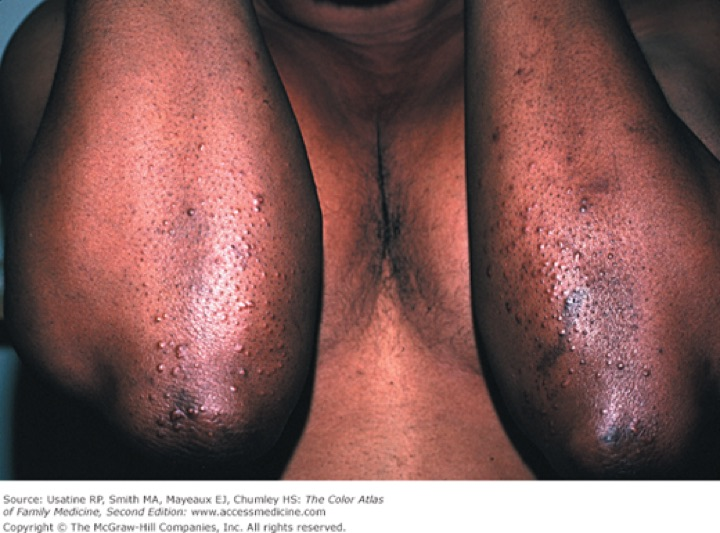
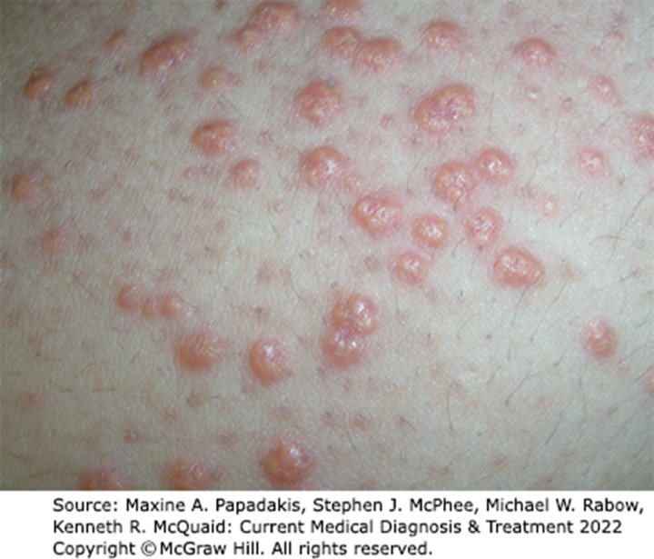
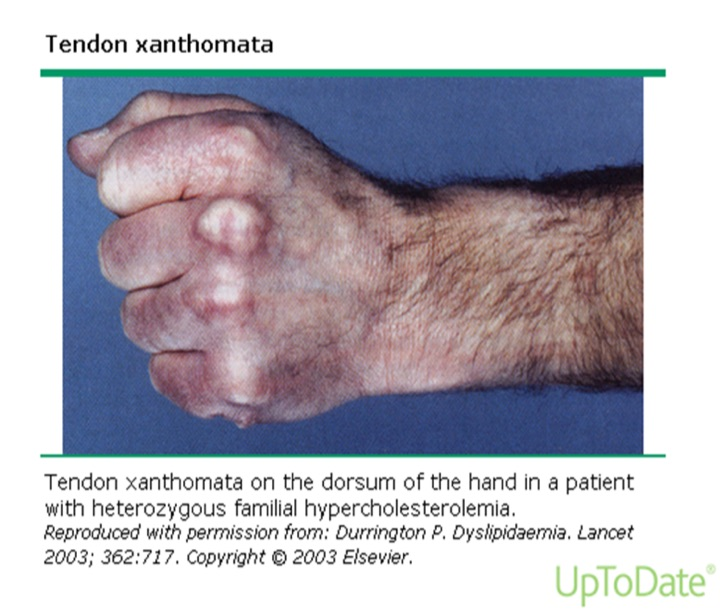
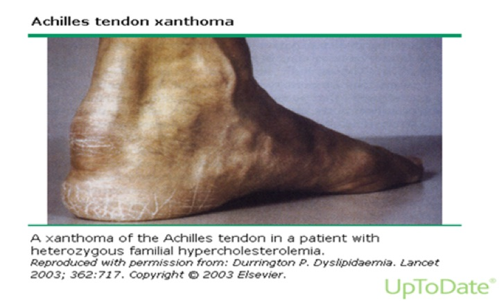
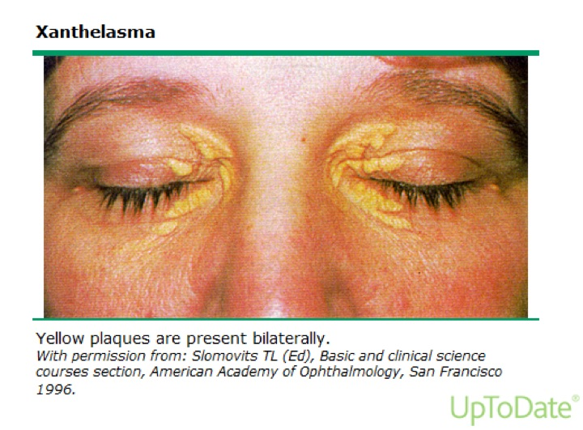
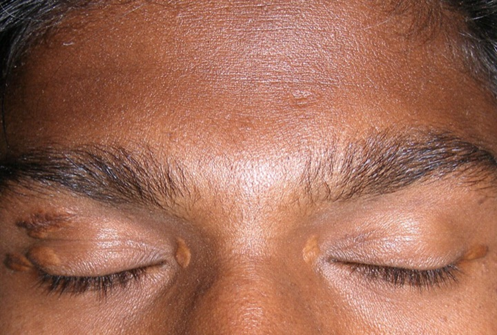
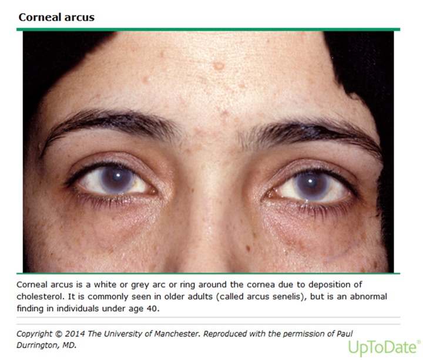
Carter on slide 32: eruptive xanthomas “present in different ways on different colored skin … very importantly, you pay attention.” The images are the deck’s own, credited on the slides to McGraw-Hill and UpToDate.
Lab values (mg/dL)
| Test | Bands |
|---|---|
| Total cholesterol | <200 desirable · 200–239 borderline high · >240 high |
| LDL | <100 optimal · 100–129 near or above optimal · 130–159 borderline high · 160–189 high · >190 very high |
| HDL | <40 low · >60 high |
| Triglyceride | <150 normal · 150–199 borderline high · 200–499 high · >500 very high |
There are no “normal” cholesterol levels (LDL means vary across the globe), and there is no evidence adult cholesterol can be “too low”. Untreated values predict higher cardiovascular morbidity and mortality. Read the values as a decision, not a table: “this is not appropriate, I need to start you on a statin.”
Slides 31–40
3.5 · The conditions, one by one
Primary (genetic) causes: overproduction or defective clearance of triglyceride; overproduction or defective clearance of LDL; excessive clearance or underproduction of HDL. Genetic types are the most common cause of dyslipidemia in children. Secondary causes are in 3.6.
Dyslipidemia (overall) Routine
Gives itself away by: nothing, usually. Most patients are found from abnormal lab values.
- Definition
- A disorder of lipoprotein metabolism with raised total cholesterol, LDL, non-HDL cholesterol or triglyceride, and/or lowered HDL.
- Who gets it
- Primary (genetic) types are the most common cause in children; mixed dyslipidemia is the most common type in clinical practice.
- Risk factors
- Secondary causes: sedentary lifestyle with a diet high in carbohydrate and saturated or trans fat, diabetes, alcohol, chronic kidney disease, hypothyroidism, obstructive liver disease, medications (3.6).
- Classic signs and symptoms
- None in most patients. When present: xanthomas, arcus, premature coronary disease (30–50), pancreatitis.
- Physical exam findings
- Eruptive, tendinous or tuberous xanthomas; xanthelasma; corneal arcus before 40 (3.4).
- Diagnostics / tests
- Lipid panel read against the bands in 3.4. Critical first step: determine which lipoproteins are raised or lowered. Rule out secondary causes, then primary causes, before a statin (3.6). Screening in 3.7.
- First-line treatment
- Therapeutic lifestyle changes, drug therapy, and a clinician–patient risk discussion; LDL is the primary target (3.8).
- Complications
- Atherosclerotic cardiovascular disease; untreated values predict higher cardiovascular morbidity and mortality.
Slides 12, 16, 31–40, 42, 58–69, 72
Severe hypertriglyceridemia Urgent
Gives itself away by: triglyceride above 500 with high total and low HDL but usually no rise in LDL, and the risk of acute pancreatitis.
- Definition
- Triglyceride >500 mg/dL, raised total cholesterol, reduced HDL; usually no rise in LDL or apolipoprotein B. Cause: impaired lipolysis of triglyceride.
- Who gets it
- Usually patients with a polygenic disposition to secondary factors such as obesity or insulin resistance.
- Risk factors
- Obesity, insulin resistance, type 2 diabetes, high-carbohydrate diet, alcohol (alcohol history is important with raised triglyceride), chronic kidney disease, nephrotic syndrome; estrogen, glucocorticoids, beta blockers, isotretinoin, bexarotene.
- Classic signs and symptoms
- Acute pancreatitis.
- Physical exam findings
- Eruptive xanthomas with extremely high chylomicrons or VLDL.
- Diagnostics / tests
- Triglyceride band (>500 very high). At ≥500, rule out diabetes, chronic kidney disease, alcoholism, pregnancy and hypothyroidism before a statin. In hypertriglyceridemia, non-HDL cholesterol (total minus HDL) assesses heart risk better than LDL alone.
- First-line treatment
- Above 500: very low-fat diet (<15% of calories from fat), weight management, physical activity, and a fibrate, niacin or both.
- Complications
- Acute pancreatitis.
Slides 32, 40, 43, 59–62, 92, 115–118
Familial chylomicronemia syndrome Urgent
Gives itself away by: fasting triglyceride usually above 1000, abdominal pain from acute pancreatitis, eruptive xanthomas and lipemia retinalis. “This is important. This is one that can save somebody’s life.”
- Definition
- A disorder that causes severe hypertriglyceridemia: fasting triglyceride >500 and usually >1000 mg/dL.
- Who gets it
- Can present in childhood or adulthood. A primary (genetic) cause.
- Risk factors
- Not covered in the lecture.
- Classic signs and symptoms
- Severe abdominal pain due to acute pancreatitis.
- Physical exam findings
- Eruptive xanthomas (small yellowish-white papule clusters on the back, buttocks and extensor arms and legs); lipemia retinalis on fundoscopy (opalescence of the retinal blood vessels); hepatosplenomegaly may be present.
- Diagnostics / tests
- Fasting triglyceride >500, usually >1000; fundoscopic exam.
- First-line treatment
- Not covered specifically; the triglyceride >500 plan applies (very low-fat diet, weight management, activity, fibrate or niacin or both).
- Complications
- Acute pancreatitis.
Slides 43–44, 118
Hypercholesterolemia (raised LDL) Routine
Gives itself away by: raised LDL from impaired hepatic uptake of LDL (fewer or weaker LDL receptors).
- Definition
- Elevated LDL cholesterol.
- Who gets it
- Not covered in the lecture beyond its causes.
- Risk factors
- Anything that reduces LDL-receptor activity: diet high in saturated and trans fat, hypothyroidism, estrogen deficiency; also liver disorders, Cushing syndrome, nephrotic syndrome, glucocorticoids.
- Classic signs and symptoms
- Usually none; associated with premature atherosclerotic disease.
- Physical exam findings
- Tendinous xanthomas may be seen with high LDL.
- Diagnostics / tests
- LDL band. Rule out hypothyroidism, nephrotic syndrome, primary biliary cirrhosis, anorexia nervosa; screen raised-LDL patients for low thyroid.
- First-line treatment
- LDL is the primary target; statins first. LDL ≥190: high-intensity statin without calculating risk; add ezetimibe if LDL stays ≥100.
- Complications
- Premature atherosclerotic cardiovascular disease.
Slides 33, 40, 45, 59–61, 69, 92, 101
Familial hypercholesterolemia: homozygous versus heterozygous was the largest single disorder in the lecture (about 9 minutes). “Big thing I need you guys to understand is about like this comes from your parents. It’s important to do history.” His contrast: a child with hypercholesterolemia → think homozygous (skin biopsy); a 40-year-old with relatives who died young → think heterozygous (no definitive test).
Both forms: a codominant mutation of the LDL-receptor gene, reduced LDL clearance, LDL usually >190 with normal triglyceride, tendon xanthomas, premature atherosclerotic disease. Homozygous = two mutant alleles; heterozygous = one.
Familial hypercholesterolemia, homozygous Urgent
Gives itself away by: a child with cutaneous xanthomas, total cholesterol ~400 to >1000, and symptomatic atherosclerosis before puberty.
- Definition
- Two mutant LDL-receptor alleles. Receptor-negative (<2% of normal receptor activity) or receptor-defective (2–25%).
- Who gets it
- 1 in 1 million worldwide; presents in childhood.
- Risk factors
- Strong family history of raised lipids in parents and other first-degree relatives.
- Classic signs and symptoms
- Symptomatic atherosclerosis before puberty.
- Physical exam findings
- Cutaneous xanthomas on the hands, wrists, elbows, knees, heels or buttocks; tendon xanthomas.
- Diagnostics / tests
- Confirmed by skin biopsy with measurement of LDL-receptor activity. Total cholesterol ~400 to >1000.
- First-line treatment
- LDL apheresis is the treatment of choice (“like dialysis”: elective removal of LDL particles). Most need more than one drug: high-intensity statin, plus ezetimibe and nicotinic acid; refractory → PCSK9 inhibitor (evolocumab, alirocumab). Liver transplantation may help by providing LDL receptors. Evinacumab is an adjunct from age 12.
- Complications
- Accelerated atherosclerosis → disability and sudden death in childhood. Untreated receptor-negative patients rarely survive past the second decade; receptor-defective patients develop cardiovascular disease by 30.
Slides 46–50, 89, 109
Familial hypercholesterolemia, heterozygous Routine
Gives itself away by: an adult with LDL 200–400, normal triglyceride, Achilles tendon xanthomas and premature coronary disease in the family.
- Definition
- One mutant LDL-receptor allele; LDL 200–400 mg/dL.
- Who gets it
- 1 in 250 worldwide; up to 5% of premature myocardial infarctions (men <55, women <65). High cholesterol from birth, usually found incidentally on routine screening.
- Risk factors
- Inheritance; it is itself a high-risk condition for atherosclerotic events.
- Classic signs and symptoms
- Usually none until premature coronary disease.
- Physical exam findings
- Tendon xanthomas in ~75% (dorsum of hands, elbows, knees, mainly Achilles); corneal arcus common.
- Diagnostics / tests
- No definitive diagnostic test is available.
- First-line treatment
- Aggressive reduction of vascular risk factors (smoking, hypertension, diabetes); diet low in saturated fat and cholesterol; high-intensity statin, plus ezetimibe and nicotinic acid; refractory → PCSK9 inhibitor. “Don’t just jump straight to the PCSK9.” Inclisiran is an adjunct in adults.
- Complications
- Premature myocardial infarction and atherosclerotic disease.
Slides 27, 33, 46–47, 51–52, 90, 110
Familial defective apolipoprotein B-100 Routine
Gives itself away by: the familial hypercholesterolemia picture (raised LDL, tendon xanthomas, premature disease) from a different gene.
- Definition
- A disorder causing hypercholesterolemia: raised LDL.
- Who gets it
- 1 in 1,500 worldwide.
- Risk factors
- Not covered in the lecture.
- Classic signs and symptoms
- Premature atherosclerotic disease.
- Physical exam findings
- Tendon xanthomas.
- Diagnostics / tests
- Raised LDL.
- First-line treatment
- Not covered in the lecture.
- Complications
- Premature atherosclerotic cardiovascular disease.
Slides 9, 53
Mixed dyslipidemia Routine
Gives itself away by: triglyceride >150 and LDL >130 (or non-HDL >160). The most common type in clinical practice.
- Definition
- Raised triglyceride and LDL: triglyceride >150 with LDL >130 or non-HDL >160 mg/dL.
- Who gets it
- The most common dyslipidemia seen in practice.
- Risk factors
- Genetic predisposition plus medical conditions and environmental factors.
- Classic signs and symptoms
- Not covered in the lecture.
- Physical exam findings
- Not covered in the lecture.
- Diagnostics / tests
- The thresholds above.
- First-line treatment
- Not covered specifically; LDL first, then triglyceride (3.8).
- Complications
- Increased atherosclerotic risk.
Slide 54
Familial dysbetalipoproteinemia Routine
Gives itself away by: triglyceride and total cholesterol both 250–500, with palmar and tuberoeruptive xanthomas.
- Definition
- A rare disorder that causes mixed dyslipidemia: chylomicron and VLDL remnants accumulate, raising triglyceride and total cholesterol together.
- Who gets it
- Rare. Caused by an apolipoprotein E mutation, associated with apolipoprotein E2 homozygosity.
- Risk factors
- Needs environmental and/or other genetic factors on top of E2 homozygosity.
- Classic signs and symptoms
- Distinctive cutaneous xanthomas.
- Physical exam findings
- Palmar xanthomas; tuberoeruptive xanthomas.
- Diagnostics / tests
- Triglyceride and total cholesterol both 250–500 mg/dL.
- First-line treatment
- Not covered in the lecture.
- Complications
- Accelerated atherosclerosis.
Slides 11, 55–56
Low HDL cholesterol Routine
Gives itself away by: HDL <40. Best fixed by lifestyle.
- Definition
- HDL <40 mg/dL (metabolic-syndrome cut-off: men <40, women <50). HDL ≥60 is a negative risk factor.
- Who gets it
- Not covered in the lecture.
- Risk factors
- Genetic excessive clearance or underproduction of HDL; anabolic steroids. Rule out diabetes, cigarette smoking, obesity.
- Classic signs and symptoms
- None; it is a coronary risk factor.
- Physical exam findings
- Not covered in the lecture.
- Diagnostics / tests
- Lipid panel.
- First-line treatment
- Lifestyle: smoking cessation (up to +10%), weight loss (+1 mg/dL per 6 pounds lost), frequent aerobic exercise (+5%; brisk, 30 minutes a day, 5 days a week), healthier fats (olive, peanut, canola; saturated fat <7% of calories), limit alcohol to moderate. Drugs that raise HDL: niacin most (15–35%), fibrates (10–30%), statins (5–22%), ezetimibe (8%).
- Complications
- Loss of reverse cholesterol transport; raised coronary risk.
Slides 6, 21, 40, 42, 62, 79, 84–86, 92, 111–113
Elevated lipoprotein(a) Routine
Gives itself away by: nothing on exam; a causal, independent risk factor that calls for aggressive LDL lowering.
- Definition
- A lipoprotein like LDL that carries apolipoprotein(a) in addition to B-100.
- Who gets it
- Not covered in the lecture.
- Risk factors
- It is itself a risk factor; ≥50 mg/dL (or 125 nmol/L) is a 2018 risk enhancer.
- Classic signs and symptoms
- Not covered in the lecture.
- Physical exam findings
- Not covered in the lecture.
- Diagnostics / tests
- Measured in selected individuals (2018 guideline).
- First-line treatment
- If elevated, aggressive therapy to decrease LDL.
- Complications
- Atherosclerotic cardiovascular disease.
Slides 7, 11, 96, 105
Metabolic syndrome Routine
Gives itself away by: any 3 of 5 criteria, with obesity measured by waist circumference, not body mass index.
- Definition
- Any 3 of: waist >40 inches (men) or >35 inches (women); triglyceride >150; HDL <40 (men) or <50 (women); blood pressure >130/>85; fasting glucose >110.
- Who gets it
- Not covered in the lecture.
- Risk factors
- Not covered; the syndrome is itself a 2018 risk enhancer.
- Classic signs and symptoms
- The five criteria.
- Physical exam findings
- Abdominal obesity by waist circumference; raised blood pressure.
- Diagnostics / tests
- Any 3 of the 5 criteria.
- First-line treatment
- Lifestyle therapy is the primary intervention in all age groups.
- Complications
- Raised atherosclerotic risk (risk enhancer).
Slides 38, 96, 98, 105
Atherosclerosis (as the deck treats it) Routine
Gives itself away by: an ASCVD event, or a risk estimate. The deck never defines atherosclerosis or explains plaque.
- Definition
- Not covered in the lecture.
- Who gets it
- Coronary heart disease is the leading cause of death in United States men and women.
- Risk factors
- LDL (highest), VLDL (increased); the major risk factors and equivalents in 3.3; lipoprotein(a).
- Classic signs and symptoms
- Major events: acute coronary syndrome, myocardial infarction, ischemic stroke, symptomatic peripheral arterial disease.
- Physical exam findings
- Not covered in the lecture.
- Diagnostics / tests
- Risk estimation (Pooled Cohort Equation, 40–79); coronary artery calcium when a statin decision is uncertain.
- First-line treatment
- Statin-centered prevention per the 2018 guideline (3.8).
- Complications
- Atherosclerotic cardiovascular events; cardiovascular death.
Slides 13–15, 20–29, 96–106
3.6 · Secondary causes, and what to rule out before a statin
| Cause | Effect |
|---|---|
| High-carbohydrate diet | ↑ hepatic VLDL-triglyceride secretion → ↑ triglyceride |
| Saturated and trans fat | Down-regulates hepatic LDL receptors → ↑ LDL |
| Obesity, insulin resistance, type 2 diabetes | ↑ hepatic VLDL; insulin promotes hepatic fatty-acid synthesis → ↑ triglyceride |
| Alcohol (excess) | Inhibits hepatic free-fatty-acid oxidation → ↑ triglyceride. Take an alcohol history with raised triglyceride. |
| Chronic kidney disease | VLDL and remnant accumulation; reduced lipolysis and remnant clearance → ↑ triglyceride |
| Nephrotic syndrome | Excess VLDL production → ↑ triglyceride and LDL |
| Cushing syndrome | Glucocorticoid overproduction → ↑ VLDL synthesis, ↑ LDL |
| Hypothyroidism | Down-regulates hepatic LDL receptors → ↑ LDL. Screen raised-LDL patients for low thyroid. |
| Liver disorders | Down-regulate hepatic LDL receptors → ↑ LDL |
| Estrogen | ↑ triglyceride (↑ HDL). Monitor on birth control pills, new postmenopausal estrogen, or pregnancy. |
| Glucocorticoids | ↑ triglyceride and LDL |
| Beta blockers · isotretinoin · bexarotene | ↑ triglyceride |
| Anabolic steroids | ↓ HDL |
Slides 58–62, 92–94
3.7 · Screening
- The decision to screen rests on overall cardiovascular risk, independent of lipid levels: age, sex, hypertension, smoking, family history of premature coronary disease (male relative <55, female <65), diabetes.
- Screen all adults 20 and older. (The United States Preventive Services Task Force line on the same slide says 20–35.)
- Children: a non-fasting lipid profile once at 9–11, and again in late adolescence. The deck gives that second window two ways (17–19 on slide 65, 17–21 on slide 66), so no question keys it. Elective screening from age 2 with a family history of heart disease or high cholesterol.
- Total cholesterol and HDL need no fasting; their ratio is the most efficient and cost-effective coronary risk predictor. Triglyceride and calculated LDL need a 9–12 hour fast.
Slides 64–66
3.8 · Management
Three parts: therapeutic lifestyle changes, drug therapy, and a clinician–patient risk discussion.
LDL first, then triglyceride. “That’s what I need you to know. Address the LDLs, then address the triglycerides, and add your adjunctive therapy on top of it.”
- “The primary target of cholesterol-lowering therapy is elevated LDL-C.” (slide 69)
- “Primary aim of therapy is based on LDL goals, but if triglycerides are >200 mg/dL after LDL goal is reached additional treatment for lowering triglycerides is indicated.” (slide 116)
- Triglyceride 200–499: intensify the LDL drugs and/or add a triglyceride drug (fibrate, niacin). Above 500: very low-fat diet (<15% of calories from fat), weight management, physical activity, fibrate or niacin or both. (slide 118)
- In hypertriglyceridemia use non-HDL cholesterol = total − HDL, whose goal sits 30 above the LDL goal. (slides 115–117)
“Goal” is the slide’s own wording from the older framework. The numeric goal tables on slides 28 and 117 are self-study; the quizzes key the order (LDL, then triglyceride above 200), never a numeric goal.
Therapeutic lifestyle changes
Saturated fat <7% of calories (Carter said “10%” once; the slide wins); more soluble fiber (20–30 g a day); consider plant stanols or sterols (in grains, vegetables, fruits, legumes, nuts and seeds); lose 5–10% of initial weight; moderate activity 30 minutes a day (brisk walking, biking, active yoga); stop smoking.
Which drug for which lipid. “Remember which medications go with which lipoprotein.” “The best one that’s increasing HDLs is niacin. And the one for lowering triglycerides is fibrates.” Generic names only.
| Class (generic names) | Main job | Effects |
|---|---|---|
| Statins: atorvastatin, fluvastatin, lovastatin, pravastatin, rosuvastatin, simvastatin, pitavastatin | Most effective for LDL | LDL ↓25–63%, maximum in 4–6 weeks; HDL ↑5–22%. Monitor lipids, liver function, creatine kinase. |
| Fibrates: gemfibrozil, fenofibrate | Most effective for triglyceride | Triglyceride ↓20–50%; HDL ↑10–30% |
| Niacin (nicotinic acid) | Raises HDL best | HDL ↑15–35%; triglyceride ↓20–50%; LDL ↓5–25% |
| Ezetimibe (cholesterol absorption inhibitor) | Adjunct LDL lowering | LDL ↓18%; HDL ↑8%; triglyceride ↓5–10% |
| Bile acid sequestrants: colestipol, cholestyramine, colesevelam | Adjunct LDL lowering | LDL ↓15–30% |
| Fish oil | — | Associated with lower coronary disease and coronary death; may lower thrombotic stroke; eat fish at least twice a week |
| PCSK9 (proprotein convertase subtilisin/kexin type 9) inhibitors: evolocumab, alirocumab | Refractory familial hypercholesterolemia; very high risk after statin + ezetimibe | Injectable monoclonal antibodies; approved for familial hypercholesterolemia; expensive |
| Bempedoic acid | Newer; oral | Up-regulates LDL receptors |
| Inclisiran | Adjunct to maximal statin in adults with heterozygous familial hypercholesterolemia or ASCVD | Subcutaneous injection |
| Evinacumab | Adjunct in homozygous familial hypercholesterolemia, age 12 and older | Intravenous; lowers LDL and triglyceride |
Carter called myopathy the “number one” statin side effect and said creatine kinase is “nephrotoxic”; neither is on a slide (and the second is wrong: in rhabdomyolysis the kidney injury comes from myoglobin). The slide fact is the monitoring list. Nystatin is not a statin (his slide 82 meme).
Statin intensity is defined by the LDL fall it produces: high about 50% or more, moderate 30% to under 50%, low under 30%.
The 2018 statin decisions (“For our testing … we are using the 2018”). Lifestyle is emphasized for everyone, at every age.
| Patient | 2018 recommendation |
|---|---|
| Clinical ASCVD, age ≤75 | High-intensity statin (lower LDL ≥50%); moderate if high is not tolerated |
| Clinical ASCVD, age >75 | Starting moderate- or high-intensity is reasonable; continuing high-intensity is reasonable |
| Very high-risk ASCVD, LDL ≥70 on maximal statin | Add ezetimibe first; then a PCSK9 inhibitor if LDL stays ≥70 (less cost-effective) |
| LDL ≥190 (severe primary hypercholesterolemia) | High-intensity statin without calculating 10-year risk; add ezetimibe if LDL stays ≥100 |
| Diabetes, age 40–75, LDL ≥70 | Moderate-intensity statin without calculating risk; high intensity reasonable with multiple risk factors or age 50–75 |
| Age 40–75, no diabetes, LDL 70–189 | Clinician–patient risk discussion, then by 10-year risk (3.3). If statins are indicated, lower LDL ≥30%; at ≥20% risk, lower LDL ≥50%. |
| Uncertain decision at intermediate risk | Coronary artery calcium: 0 → may withhold or delay (not in smokers, diabetes, or strong family history); 1–99 favors a statin (especially ≥55); ≥100 or ≥75th percentile → statin |
| Age 20–39 | Estimate lifetime risk to encourage lifestyle; consider a statin with a family history of premature ASCVD and LDL ≥160 |
| Age 0–19 | Lifestyle; a diagnosis of familial hypercholesterolemia → statin |
| Age >75, primary prevention | Clinical assessment and risk discussion |
Risk enhancers (favor a statin at borderline or intermediate risk): family history of premature ASCVD; LDL persistently ≥160; metabolic syndrome; chronic kidney disease; preeclampsia or premature menopause (<40); inflammatory disease (rheumatoid arthritis, psoriasis, HIV (human immunodeficiency virus)); South Asian ancestry; triglyceride persistently ≥175; and, if measured, apolipoprotein B ≥130, high-sensitivity C-reactive protein ≥2.0, ankle-brachial index <0.9, lipoprotein(a) ≥50 mg/dL.
Follow-up: repeat lipids 4–12 weeks after starting or changing a statin, then every 3–12 months; response is the percentage fall in LDL from baseline.
Slides 69, 72–90, 96–118
3.9 · Populations
| Population | What the deck gives |
|---|---|
| Infant | Nothing in the deck. |
| Child | Genetic types are the most common cause. Non-fasting screen once at 9–11; elective screening from age 2 with a family history. Homozygous familial hypercholesterolemia presents in childhood; confirm by skin biopsy; apheresis. Ages 0–19: lifestyle, and a statin once familial hypercholesterolemia is diagnosed. |
| Adolescent | Second screen in late adolescence (window stated two ways, see 3.7). Evinacumab is an adjunct in homozygous disease from age 12. |
| Adult | Screen from 20. Ages 20–39: lifetime risk and lifestyle; statin with premature family history and LDL ≥160. Ages 40–75: the 10-year risk pathway (3.3, 3.8). |
| Elderly | Age ≥65 is a high-risk condition. Above 75: clinical assessment and risk discussion in primary prevention; in clinical ASCVD, starting or continuing a statin is reasonable. |
4 · Valvular Heart Disease
Instructional Objectives
VALVULAR HEART DISEASE — Grady G. Carter, MSHS, PA-C
- Compare and contrast the etiologies, epidemiology, risk factors, clinical manifestations, differential diagnosis, diagnostic testing (including ordering and interpretation), management (acute and chronic, including applicable rehabilitative and palliative care), appropriate referrals, patient education, prevention, and prognosis for valvular heart disease
- Acute rheumatic fever
- Aortic stenosis
- Aortic regurgitation
- Mitral stenosis
- Mitral regurgitation
- Mitral valve prolapse
- Tricuspid regurgitation
- Tricuspid stenosis
- Pulmonic stenosis
- Pulmonic regurgitation
- Compare and contrast anticoagulation therapy for prosthetic heart valves.
- Identify medical care strategies for valvular heart disease in the lecture topic list for the following populations.
The syllabus numbers the disease list (2–11) as though each were an objective, and objective 13 names no populations — the list is missing in the syllabus itself.
What is tested, in the lecturer's own words (lecture recording, 25 September, two parts):
- No audio. “There will be no audio clips on your test.” Murmurs arrive as words — “When you see the word harsh or rumble, it means stenosis … blowing, that's regurgitation.”
- Locations arrive anatomically. “They're not going to say at the pulmonic location … they're going to say the second intercostal space at the left sternal border. Then you have to know what valve is directly underneath there.”
- Maneuver → response. “You hear this sound, and then you have them do this test, and this is the response.”
- Every valve counts equally. “When it comes to the test, you will just as likely have a tricuspid valve question as you will an aortic valve question.” Aortic stenosis got the most time because it matters most in practice, not because it is weighted more on the exam.
- Severity grading is asked only for aortic stenosis and mitral stenosis (“I'm not asking about the lesser valves”). For aortic and mitral regurgitation learn only severe = regurgitant fraction of 50% or more.
- Not tested: the suffusion sign on slide 67 (“I'm not going to test you on it”), and the low-flow / low-gradient “pseudo-severe” aortic stenosis named on slide 21 (aimed at future cardiology PAs).
- Electrocardiogram findings are recognition only — the electrocardiogram lecture has not happened yet.
- Program rules: no dosing, no mechanism-of-action questions, generic names only, no acronyms in questions. INR (international normalized ratio) targets are laboratory targets, not doses, and are learned.
Built from the slides. The recording adds weight only: ★ marks show what he emphasized. Where he said a slide is wrong, his correction wins (the two erratum boxes below); where he did not, the slide stands unless it contradicts itself.
Erratum from the lecture — he said these slides are wrong
| Slide | The slide says | His correction (learn this) |
|---|---|---|
| 28 (aortic regurgitation exam) | “High-Pitch BLOWING DIASTOLIC | The murmur is a high-pitched blowing DIASTOLIC murmur. “It's not holosystolic because it's diastolic. So cross that out.” Holosystolic belongs to mitral and tricuspid regurgitation. |
| 29 (aortic regurgitation echo) | “Used to determine cause of | Echocardiography determines the cause of aortic regurgitation — aortic root dilation, aortic dissection. “That should be an A.” |
Deck error — copy-paste slips he did not mention
- Slide 44: the mitral regurgitation definition is labeled “Mitral Stenosis:”. The definition itself — incomplete mitral valve closure with backflow into the left atrium — is mitral regurgitation.
- Slide 52: “Children & young adults – Percutaneous Aortic Balloon Valvuloplasty” is repeated under mitral regurgitation surgery, copied from the aortic stenosis slide (21). It belongs to aortic stenosis; it is not learned for mitral regurgitation.
- Slide 53: the mitral regurgitation “When to refer” slide says “MS” throughout (copied from slide 43). It is not used here.
- Slide 65: tricuspid stenosis is defined as inflow obstruction “from the LA and SVC/IVC”. The tricuspid valve sits between the right atrium and the right ventricle — slide 66 has it right (“obstruction of inflow from RA to RV”).
- Slide 31: “vasodilators (nitroprusside & dobutamine)”. Dobutamine is an inotrope, not a vasodilator. For acute severe aortic regurgitation awaiting surgery, learn intravenous diuretics + nitroprusside.
Unsettled — not keyed in the quizzes
- Slide 29, which leaflet flutters on echo. The slide says the regurgitant jet makes the anterior mitral leaflet flutter in diastole. Asked in class, he first said mitral, then said “It's the aortic leaflet” and asked for it to be crossed out. Standard teaching says mitral. Left for a ruling; no question asks it.
- Slide 74, valve type by age (“TAVR/TMVR … <55”, “Mechanical … <70”). Earlier in the lecture he taught the reverse (a young patient gets a mechanical valve; 60–80 gets the transcatheter valve). Only what both agree on is learned (4.11).
- Slide 38, mitral stenosis “Increased with Valsalva”. Contested and internally inconsistent (a sentence fragment, and the opposite of every other left-sided lesion on the deck). No mitral stenosis maneuver is learned.
- Slide 64, pulmonic regurgitation “Almost always congenital, no treatment required” contradicts slide 61 (“Iatrogenic … MOST COMMON cause of PR”). He settled it three times: “the most common overall reason is iatrogenic.” Learn iatrogenic.
- Slide 40, mitral stenosis bands. Mild (1.5–2.5) and moderate (1.0–1.5) overlap at 1.5. Learn severe only.
Spoken slips — the slide wins: his pulmonic regurgitation example put the balloon in a mitral valve (slide 61: surgery on the right ventricular outflow tract); carcinoid disease was called “cancer of the valve” (slides 55, 61, 65 say carcinoid disease); a transcatheter valve was called “plastic … rubber” (not on any slide); and “pulmonary hypertension is our number one cause” of pulmonic regurgitation, which he overrode himself 40 seconds later.
Where each objective is answered
| Objective | Answered in |
|---|---|
| 1. Etiology, epidemiology, risk factors, manifestations, testing, management, referral, education, prevention, prognosis | 4.1 (murmur foundations), then each lesion's subsection and its eight-point block in 4.13, 4.12 (test tips) · the deck has no prevention content for any lesion |
| 2. Acute rheumatic fever | No section in the deck. It appears only as an etiology — rheumatic heart disease, an autoimmune reaction to group A beta-hemolytic streptococci (slides 12, 24, 34, 45, 65): see 4.2, 4.3, 4.4, 4.5 and 4.9 |
| 3. Aortic stenosis | 4.2 |
| 4. Aortic regurgitation | 4.3 |
| 5. Mitral stenosis | 4.4 |
| 6. Mitral regurgitation | 4.5 |
| 7. Mitral valve prolapse | 4.6 |
| 8. Tricuspid regurgitation | 4.10 |
| 9. Tricuspid stenosis | 4.9 |
| 10. Pulmonic stenosis | 4.7 |
| 11. Pulmonic regurgitation | 4.8 |
| 12. Anticoagulation for prosthetic heart valves | 4.11 |
| 13. Populations | 4.14 · only percutaneous aortic balloon valvuloplasty for children and young adults (slide 21), mitral valve prolapse in women 15–30 (slide 54) and the aortic stenosis age cut-offs (slides 12, 13, 16) |
4.1 · Anatomy, heart sounds and the murmur words
“This is how I passed this test in PA school.” The testing hints appear twice in the deck (slides 8 and 73, opening and closing):
| Word in the stem | Means | Flow | Overload |
|---|---|---|---|
| Harsh or rumble | Stenosis | Abnormal forward flow | Pressure overload |
| Blowing | Regurgitation | Abnormal back flow | Volume overload |
| Timing | Lesions |
|---|---|
| Systolic | Aortic stenosis, mitral regurgitation · pulmonic stenosis, tricuspid regurgitation |
| Diastolic | Aortic regurgitation, mitral stenosis · pulmonic regurgitation, tricuspid stenosis — “ARMS rest because they are PRetty TiredS” |
“What do we know about the word harsh? Stenosis. Systolic. We only have two systolic stenotic diseases … you just went from a 25% chance to a 50-50.” (Aortic stenosis and pulmonic stenosis.)
Where you hear it: A-P-E-T-M (the picture on slide 8)
| Site | Location given in a stem |
|---|---|
| Aortic | 2nd intercostal space, right sternal border (right upper sternal border) |
| Pulmonic | 2nd intercostal space, left sternal border (left upper sternal border) |
| Erb's point | 3rd intercostal space, left sternal border |
| Tricuspid | 5th intercostal space, lower left sternal border |
| Mitral | Apex — point of maximal impulse, 5th intercostal space at the midclavicular line |
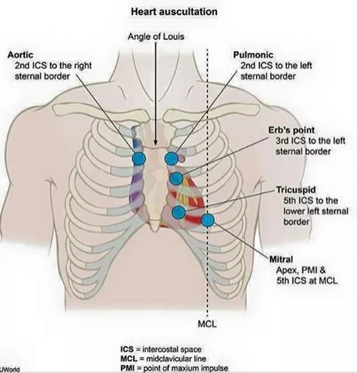
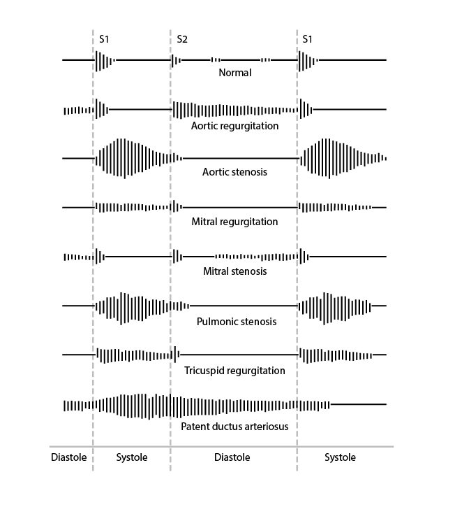
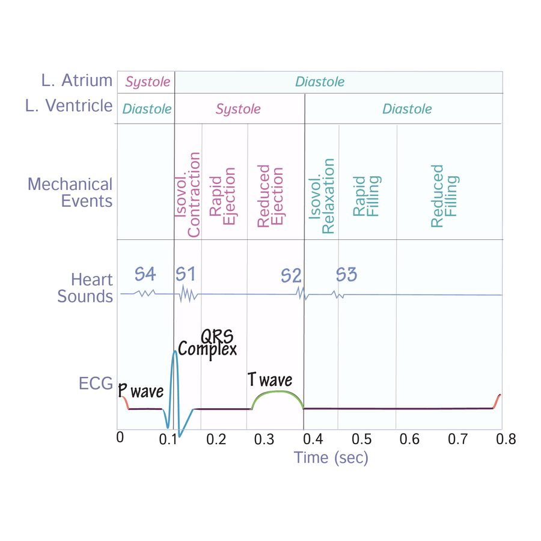
Heart sounds (slide 7)
- S1 (systolic): the atrioventricular valves close — tricuspid, mitral.
- S2: the semilunar valves close — pulmonic, aortic.
- S3 (diastolic): high volume into a dilated left ventricle (systolic heart failure); the slide lists aortic regurgitation (back flow) and mitral stenosis (late opening).
- S4: high pressure against a hypertrophied left ventricle (diastolic heart failure), secondary to aortic regurgitation or aortic stenosis.
Respiration: “RILE” (slides 9–10)
| Inspiration | Expiration | |
|---|---|---|
| Intrathoracic pressure | Negative | Increased |
| Venous return | Increased to the right heart (more right-sided preload) | Reduced to the right heart; blood forced out of the lungs into the left atrium (more left-sided preload) |
| Louder murmurs | Right-sided: tricuspid regurgitation, pulmonic stenosis, tricuspid stenosis, pulmonic regurgitation | Left-sided: mitral regurgitation, aortic stenosis, aortic regurgitation, mitral stenosis |
Carvallo sign = a right-sided murmur that gets louder with inspiration — in the deck, the tool that separates tricuspid regurgitation from mitral regurgitation (slide 71).
Slides 5–10, 73
4.2 · Aortic stenosis
“That was the big heavy one … That's the one I want you to remember.” Obstruction of left ventricular outflow across the aortic valve — the most common valvular disease.
| Severe aortic stenosis — “4, 40 and 1” | Value |
|---|---|
| Valve area | <1.0 cm |
| Mean gradient | >40 mmHg |
| Jet velocity | >4.0 m/s |
(Slide 19 also gives mild >1.5 cm / <25 mmHg / <3.0 m/s and moderate 1.0–1.5 cm / 25–40 / 3.0–4.0; he taught severe only.)
| Cardinal symptom | Average survival once it appears |
|---|---|
| Angina (usually exertional) | 5 years |
| Syncope (usually exertional) | 3 years |
| Congestive heart failure / exertional dyspnea — the most common symptom | 2 years — the worst prognosis |
Symptomatic aortic stenosis has a 3-year mortality of 75%. “50% of people with severe aortic stenosis will be dead in two years if it is untreated … can't miss this one.”
The murmur: HARSH SYSTOLIC ejection crescendo-decrescendo murmur at the 2nd right intercostal space (right upper sternal border), radiating to the carotids. Decreased with Valsalva, standing, handgrip (more afterload or less volume → less flow through the valve); increased with squatting and sitting forward (more preload; sitting forward brings the valve closer to the chest wall).
Simultaneous palpation of a forceful left ventricular apex beat and a delayed, weakened carotid pulse is a clue that severe aortic stenosis is present — “a clinical way of knowing … moderate versus severe.”
Patients are PRELOAD dependent. Medical treatment is not effective (mild and moderate only), and the rules are what to avoid:
- Strenuous physical activity and competitive sports
- Dehydration and hypovolemia
- With hypertension: beta blockers and calcium channel blockers
- With angina: nitrates (“What does nitrates do to your preload? Drops it.”)
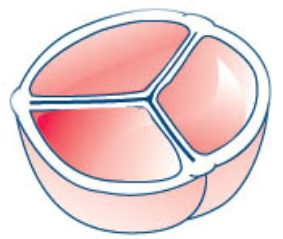
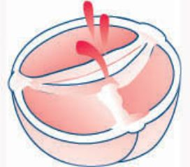
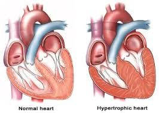
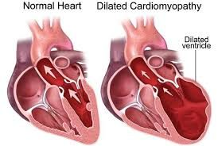
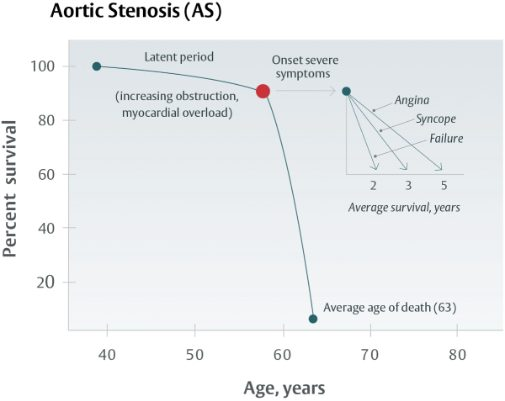
Causes, who gets it, and the mechanism
- Degenerative (atherosclerosis: hyperlipidemia, diabetes, smoking; chronic wear and tear): the most common cause over 70.
- Congenital bicuspid aortic valve: the most common cause under 70.
- Acquired: rheumatic heart disease (an autoimmune reaction to group A beta-hemolytic streptococci); endocarditis — 50% of endocarditis is mitral and 20% aortic, and untreated endocarditis carries an 80% one-year mortality.
- Epidemiology: 80% of symptomatic patients are men; present in 25% of patients older than 65 and 35% older than 70; 10–20% progress to significant stenosis within 10–15 years. Risk factors: hypertension, hyperlipidemia, smoking.
- Mechanism: outflow obstruction → left ventricular pressure overload → myocyte remodeling → concentric left ventricular hypertrophy → diastolic heart failure (heart failure with preserved ejection fraction).
- Symptoms are rare until the orifice is about 1 cm (normal 3–4 cm), usually at ages 60–80. Progression is insidious because resting cardiac output holds until late; once symptomatic, the prognosis is severely worsened.
Diagnosis, surgery and referral
- Electrocardiogram: left ventricular hypertrophy in severe disease (low sensitivity).
- Transthoracic echocardiogram: thickened, calcified leaflets, reduced systolic opening, left ventricular hypertrophy in advanced disease. Transthoracic for degenerative; transesophageal useful for congenital.
- Definitive: left heart catheterization.
- Any symptom suggestive of aortic stenosis (exertional chest pressure, shortness of breath, syncope) → echocardiogram.
- Surgery when severe (<1, >40, >4) and symptomatic left ventricular systolic dysfunction, or a bicuspid valve: TAVR (transcatheter aortic valve replacement); mechanical valve (titanium and carbon — lifelong anticoagulation) vs biological (pig or cow tissue — no anticoagulation); children and young adults → percutaneous aortic balloon valvuloplasty.
- Refer: all patients with aortic stenosis on echocardiogram get a cardiology consult to evaluate and set follow-up frequency.
4.3 · Aortic regurgitation
Incomplete aortic valve closure lets blood flow back into the left ventricle. “AR and AI [aortic regurgitation and aortic insufficiency] are the same thing” — a stem may say aortic insufficiency.
The murmur (corrected, see the erratum): a high-pitched BLOWING DIASTOLIC murmur at the 3rd intercostal space / left upper sternal border, radiating to the apex. Severity is proportional to the murmur's duration. Decreased with Valsalva and standing; increased with squatting, sitting forward and handgrip. Other findings: bounding pulses, wide pulse pressure, thrills, displaced point of maximal impulse.
Corrigan's pulse (“water hammer” or “collapsing” pulse: a very rapid upstroke followed by a rapid collapse) goes with aortic regurgitation. “The PANCE (Physician Assistant National Certifying Exam) did it to me … Corrigan's pulse was noted, and they didn't tell you what it was.” de Musset sign = head bobbing.
Severe = a regurgitant fraction of 50% or more — “50% of your cardiac output passed that valve going back.” (The orifice-area and volume columns of slide 30 are not taught; its echo picture shows stenosis-type numbers and is not used.)
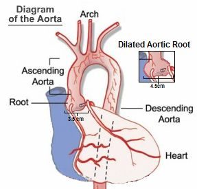
- Causes — valve disease, aortic root disease or both. Valvular: congenital bicuspid valve, endocarditis, rheumatic fever, myxomatous (collagen) disease, trauma, syphilis, ankylosing spondylitis. Root: aortic dissection, cystic medial degeneration, Marfan syndrome, nonsyndromic familial aneurysm, aortitis, hypertension.
- Mechanism: diastolic backflow → eccentric hypertrophy and dilation → left ventricular dilation (systolic heart failure) → heart failure with reduced ejection fraction.
- Acute (myocardial infarction, endocarditis, aortic dissection, trauma): cardiogenic shock, pulmonary edema. Chronic: asymptomatic for 10–15 years, then congestive heart failure (exertional sinus tachycardia, exertional dyspnea, orthopnea, paroxysmal nocturnal dyspnea, excessive sweating, anginal chest pain).
- Diagnosis: electrocardiogram — left ventricular hypertrophy in chronic disease (non-specific); echocardiogram determines the cause (aortic root dilation, aortic dissection); catheterization is definitive but not necessary.
- Treatment: medical = afterload reduction (ACE (angiotensin-converting enzyme) inhibitor or angiotensin receptor blocker, dihydropyridine calcium channel blocker, hydralazine) for aortic regurgitation with preserved ejection fraction, or asymptomatic. Acute severe: emergency aortic valve replacement or repair, ideally within 24 hours; if surgery is delayed, stabilize in intensive care with intravenous diuretics and nitroprusside. Chronic with mildly reduced or reduced ejection fraction, symptomatic or not: surgical candidate — untreated, survival is only 2–3 years.
- Refer: any audible murmur → cardiology consult; a dilated aortic root is monitored by cardiology.
4.4 · Mitral stenosis
Obstruction of left atrial outflow across the mitral valve. Rheumatic heart disease is the MOST COMMON cause. 80% of mitral stenosis from rheumatic fever is in women; it is usually diagnosed about 20 years after the rheumatic fever, and it is rare in developed countries because rheumatic fever has declined.
Left atrial enlargement → atrial fibrillation → thromboembolism. “Your mitral stenosis patients that have already affected their left atrium, most of them will develop AFib [atrial fibrillation].”
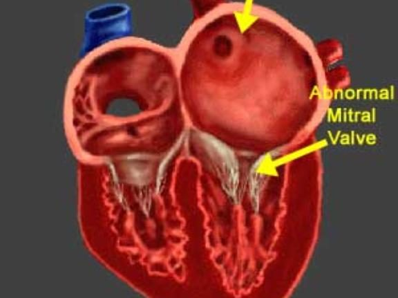
- Mechanism: thickened, immobile leaflets narrow the orifice → left atrial size and pressure rise → pulmonary vasoconstriction, raised pulmonary artery pressure, right ventricular pressure overload → right-sided heart failure; heart failure with preserved ejection fraction.
- Symptoms are rare until the orifice is a third of normal, then left-sided heart failure: dyspnea on exertion, cough, orthopnea, paroxysmal nocturnal dyspnea, fatigue. Plus hemoptysis (high left atrial pressure ruptures small bronchial vein anastomoses), hoarseness — Ortner syndrome (the enlarged left atrium presses on the left recurrent laryngeal nerve) and dysphagia (the left atrium presses on the esophagus).
- The murmur: low-pitched decrescendo-crescendo RUMBLING DIASTOLIC murmur at the apex, starting with an opening snap after S2; listen with the bell, patient in the left lateral decubitus position (lying on the left side). No maneuver is learned — see the unsettled list.
- Electrocardiogram: left atrial abnormality (the P wave); atrial fibrillation is common in severe disease; right ventricular hypertrophy with pulmonary hypertension. Transthoracic echocardiogram: large left atrium, stenotic valve. Catheterization is not necessary (usually done for an ischemic evaluation).
- Severe mitral stenosis: area <1.0 cm, mean gradient >10 mmHg, peak velocity >3.0 m/s, proximal flow always present.
- Treatment: asymptomatic in sinus rhythm → no therapy; dyspnea and orthopnea → loop diuretics (furosemide, bumetanide). Surgery when severe and symptomatic dyspnea or pulmonary hypertension: percutaneous balloon valvotomy; valve replacement with moderate symptoms or pulmonary hypertension.
- Refer everyone with mitral stenosis on echocardiogram; any symptoms suggestive (dyspnea on exertion, orthopnea) → echocardiogram.
4.5 · Mitral regurgitation
Incomplete mitral valve closure lets blood flow back into the left atrium during systole (the slide mislabels this line “Mitral Stenosis” — see the deck-error box).
- The murmur: HOLOSYSTOLIC BLOWING murmur at the apex, best heard in the left lateral decubitus position, radiating to the axilla; ± S3, ± thrill. Increased with squatting and handgrip (more resistance to ejection pushes more blood back into the left atrium); decreased with standing and Valsalva.
- Acute causes: acute myocardial infarction with papillary muscle rupture, infective endocarditis, rheumatic fever, rupture of the chordae tendineae, acute left ventricular dilation (myocarditis, ischemia), mechanical failure of a prosthetic mitral valve. Chronic causes: mitral valve prolapse, infective endocarditis, rheumatic fever, hypertrophic obstructive cardiomyopathy, dilated cardiomyopathy.
- Mechanism: left atrial dilation with pressure and volume overload → left ventricular dilation with eccentric hypertrophy (systolic heart failure). In acute mitral regurgitation the reduced left-sided pressures avoid right heart failure; chronic disease leads to right heart failure and then combined right and left failure.
- Symptoms: mild-to-moderate isolated disease is usually asymptomatic; palpitations; acute → left-sided failure (dyspnea, fatigue, orthopnea, paroxysmal nocturnal dyspnea, rales, elevated jugular venous pressure, leg edema).
- Diagnosis: electrocardiogram — left atrial enlargement, left ventricular hypertrophy in severe disease (low sensitivity); transthoracic echocardiogram — regurgitant flow, left ventricular hypertrophy, left atrial enlargement; left heart catheterization not required. Severe = regurgitant fraction 50% or more (“Again, 50% regurge, that's a lot”).
- Medical treatment: increase forward cardiac output while reducing regurgitant volume; treat the comorbid atrial fibrillation and pulmonary hypertension.
- Surgery: severe disease, symptomatic left ventricular systolic dysfunction, ejection fraction <60%, left ventricular end-systolic dimension >40 mm. Options: mitral valve clip, TMVR (transcatheter mitral valve replacement), mechanical (lifelong anticoagulation) or biological (none) valve replacement.
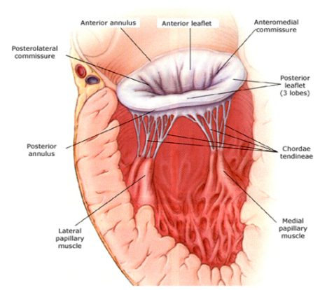
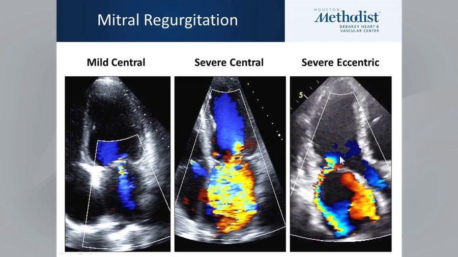
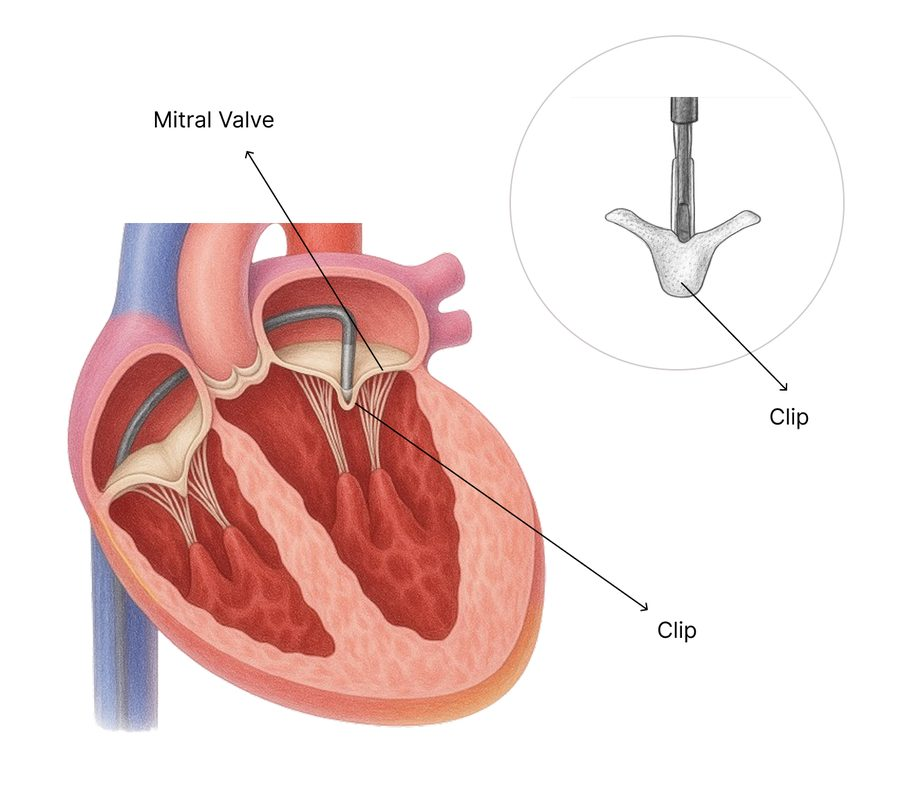
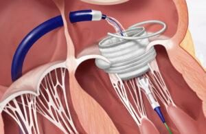
4.6 · Mitral valve prolapse
“It's a different instructional objective, so you have to know it, but basically, it's just mitral regurg. The reason is just different.”
| Field | Slide 54 |
|---|---|
| Definition | Flaring of the mitral valve leaflets into the left atrium during systole |
| Cause | Myxomatous degeneration of the mitral valve; the slide calls it a congenital condition |
| Who | Usually healthy women 15–30 years old |
| Presentation | Usually benign and asymptomatic; mid-systolic click at the apex; may develop mitral regurgitation symptoms and signs |
| Diagnosis | Echocardiogram: thickened, redundant mitral leaflets (>5 mm) |
| Treatment | Usually none. If it progresses to mitral regurgitation: clip, transcatheter mitral valve replacement, biological or mechanical replacement |
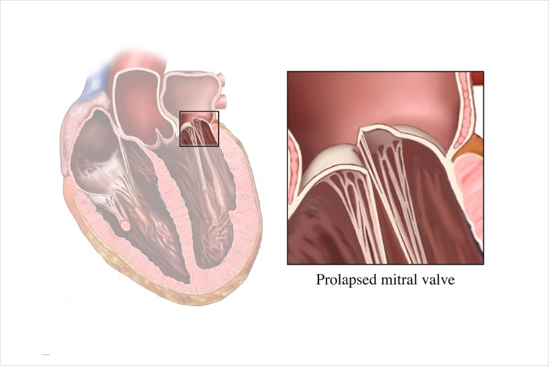
4.7 · Pulmonic stenosis
- Definition: right ventricular outflow obstruction of blood to the lungs.
- Cause: almost always congenital; carcinoid disease; commonly part of tetralogy of Fallot.
- Mechanism: raised right ventricular pressure → right ventricular hypertrophy (diastolic failure); volume overload → dilated right heart failure (systolic failure).
- Symptoms: mild-moderate usually asymptomatic; severe → right heart failure symptoms: exertional dyspnea, fatigue, angina, syncope. Late: right heart failure, hepatomegaly, ascites, edema.
- The murmur: “Harsh, high pitched, crescendo decrescendo, mid systolic ejection. Look at your words.” At the left 2nd–4th intercostal space / left upper sternal border; increases with inspiration; split S2.
- Diagnosis: electrocardiogram — right axis deviation, right ventricular hypertrophy; echocardiogram — abnormal valve motion, increased jet on Doppler. (The grading table is not tested — “not the lesser valves”.)
- Treatment: mild-moderate → none, with a 94% 20-year survival. Severe with symptoms → diuretics for right heart failure symptoms, pulmonic balloon valvuloplasty; severe congenital disease may need replacement.
- Refer to cardiology if present on echocardiogram, whether congenital or heart-failure related.
4.8 · Pulmonic regurgitation
Incomplete pulmonic valve closure lets blood flow back into the right ventricle. Iatrogenic is the MOST COMMON cause — after surgical valvotomy, valvectomy or valvuloplasty to relieve right ventricular outflow tract obstruction. “The most common overall reason is iatrogenic.”
- Causes: high-pressure — pulmonary hypertension; low-pressure — congenital (bicuspid), carcinoid disease, iatrogenic (most common).
- Mechanism and symptoms: retrograde flow from the pulmonary artery → right ventricular overload → right-sided heart failure: fatigue, peripheral edema, jugular venous distension, ascites.
- The murmur: brief, high-pitched, decrescendo early DIASTOLIC murmur at the 2nd left intercostal space, radiating to the mid right sternal border with full inspiration — the Graham Steell murmur. Louder with more venous return (inspiration, squatting, supine); softer with less (expiration, standing).
- Diagnosis: usually an incidental finding on echocardiogram or physical exam.
- Treatment: treat the underlying condition. Refer when seen on echocardiogram or with right heart failure symptoms and signs.
4.9 · Tricuspid stenosis
- Definition: right ventricular inflow obstruction — the narrowed tricuspid valve obstructs inflow from the right atrium to the right ventricle (slide 66; slide 65's “from the LA” is a deck error).
- Cause: most commonly rheumatic fever worldwide; in the United States almost always congenital; carcinoid disease. Most common in women.
- Mechanism: right atrial dilation and hypertrophy, low cardiac output, portal congestion → right heart failure without right ventricular dysfunction.
- Symptoms: mild-moderate usually asymptomatic; severe → a fluttering discomfort in the neck, cold skin (low cardiac output), right upper quadrant pain (enlarged liver).
- The murmur: soft opening snap and mid-DIASTOLIC RUMBLE at the left lower sternal border near the xiphoid; increases with inspiration; jugular venous distension.
- Diagnosis: electrocardiogram — right atrial enlargement out of proportion to right ventricular hypertrophy; echocardiogram — abnormal valve motion, increased jet on Doppler (grading not tested; the slide's example picture grades mild by its own table and is not used).
- Treatment (severe with symptoms): low salt, diuretics, aldosterone antagonist; bioprosthetic valve replacement is preferred; balloon valvotomy and valve repair are reserved for hepatic congestion that may lead to cirrhosis or severe systemic venous congestion. The “Mild to Moderate” heading on slide 69 has nothing under it.
- Refer when seen on echocardiogram or with heart-failure symptoms.
4.10 · Tricuspid regurgitation
Incomplete closure lets blood flow from the right ventricle back into the right atrium.
- Most common cause: dilation of the tricuspid annulus from right ventricular dilation in the setting of pulmonary hypertension.
- Primary cause: infective endocarditis in intravenous drug users — “when it's on the tricuspid valve, it's usually IV [intravenous] drug use.”
- The murmur: HOLOSYSTOLIC at the left mid or lower sternal border near the epigastrium; increases with inspiration (Carvallo sign), which distinguishes it from mitral regurgitation.
- Other findings: elevated jugular venous pressure with neck pulsations; a venous thrill over the right jugular vein. Mild-moderate usually asymptomatic; severe → pedal edema, ascites.
- Diagnosis: echocardiogram with Doppler shows the regurgitation and prolapsed, scarred or displaced leaflets.
- Treatment: treat the underlying condition; annuloplasty if the regurgitation is from annular dilation; valve repair or replacement if from a primary cause.
- Refer when identified on echocardiogram or with right heart failure symptoms.
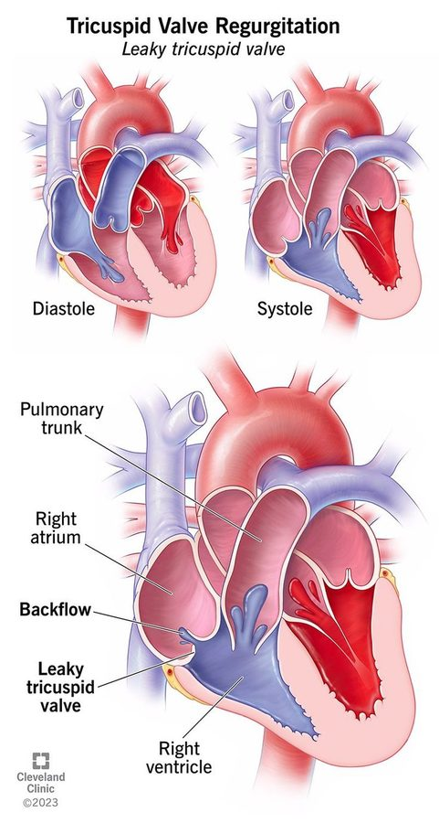
4.11 · Prosthetic valves and anticoagulation
| Mechanical (titanium and carbon) | Biological / bioprosthetic (pig or cow tissue) | |
|---|---|---|
| Anticoagulation | Lifelong | None beyond the immediate postoperative period |
| Preferred when | — | Life expectancy is shorter than the valve's expected longevity, or any contraindication to anticoagulation |
For mechanical valves, a vitamin K antagonist is recommended over no vitamin K antagonist and over antiplatelet agents. The most commonly used one is warfarin. “It's the only one that's going to work well with mechanical.”
| Mechanical valve position | Target INR (international normalized ratio) |
|---|---|
| Aortic | 2.5 (range 2.0–3.0) |
| Mitral | 3.0 (range 2.5–3.5) |
| Both aortic and mitral | 3.0 (range 2.5–3.5) — “stick with the higher” |
Bridging: if surgery requires the switch to heparin, warfarin must be BRIDGED until the international normalized ratio is therapeutic. “The word we use is bridge … the answer is heparin.”
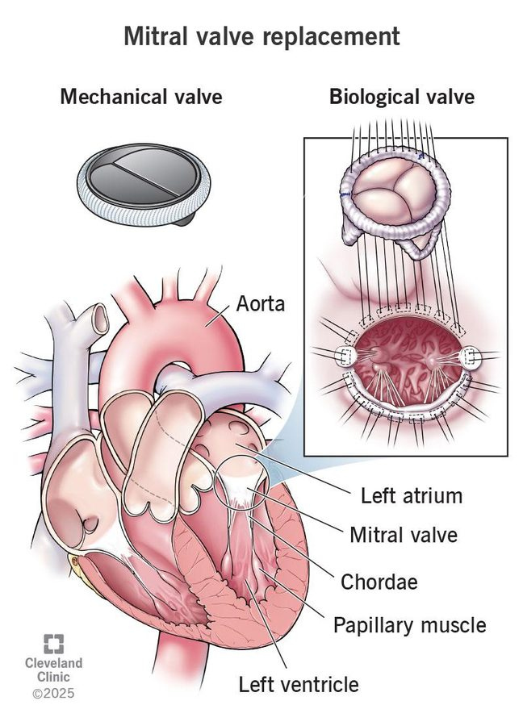
Not learned: slide 74's age cut-offs for transcatheter and mechanical valves (see the unsettled list).
4.12 · Test tips: the nine murmurs side by side
“This is the best way and easiest way to identify them on your test. It is not the best and easiest way to identify them in real life.”
| Lesion | Timing | Words | Where | Radiates / respiration | The clue |
|---|---|---|---|---|---|
| Aortic stenosis | Systolic ejection | Harsh, crescendo-decrescendo | 2nd right intercostal space | Carotids; louder on expiration | Angina / syncope / heart failure; forceful apex + delayed weak carotid = severe |
| Aortic regurgitation | Diastolic | High-pitched blowing | 3rd intercostal space / left upper sternal border | Apex; louder on expiration | Corrigan's pulse, de Musset sign, wide pulse pressure |
| Mitral stenosis | Diastolic | Low-pitched rumble after an opening snap | Apex (bell, left lateral decubitus) | Louder on expiration | Rheumatic history; atrial fibrillation; hoarseness, hemoptysis, dysphagia |
| Mitral regurgitation | Holosystolic | Blowing | Apex (left lateral decubitus) | Axilla; louder on expiration | Acute after infarction (papillary muscle) or chordal rupture |
| Mitral valve prolapse | Mid-systolic | Click | Apex | — | Healthy woman 15–30 |
| Pulmonic stenosis | Mid-systolic ejection | Harsh, high-pitched, crescendo-decrescendo | Left 2nd–4th intercostal space | Louder on inspiration; split S2 | Congenital; tetralogy of Fallot |
| Pulmonic regurgitation | Early diastolic | Brief, high-pitched, decrescendo | 2nd left intercostal space | Mid right sternal border on full inspiration (Graham Steell) | Prior valvotomy / valvuloplasty (iatrogenic) |
| Tricuspid stenosis | Mid-diastolic | Rumble, soft opening snap | Left lower sternal border near the xiphoid | Louder on inspiration | Right atrial enlargement out of proportion; right upper quadrant pain |
| Tricuspid regurgitation | Holosystolic | — | Left mid/lower sternal border near the epigastrium | Louder on inspiration (Carvallo) | Intravenous drug use; pulmonary hypertension |
Slides 8–10, 17, 27–28, 38, 48, 54, 57, 63, 67, 71, 73
4.13 · The conditions, point by point
Aortic stenosis
Defining feature: harsh systolic crescendo-decrescendo murmur at the 2nd right intercostal space radiating to the carotids; severe = <1.0 cm, >40 mmHg, >4.0 m/s
- Definition
- Obstruction of left ventricular outflow across the aortic valve; the most common valvular disease.
- Who gets it
- 80% of symptomatic patients are men; 25% of patients older than 65 and 35% older than 70; symptoms usually at 60–80. Degenerative is the most common cause over 70, bicuspid valve under 70.
- Risk factors
- Hypertension, hyperlipidemia, smoking; rheumatic heart disease; endocarditis.
- Classic signs & symptoms
- Exertional angina (5-year survival), exertional syncope (3 years), congestive heart failure / exertional dyspnea (2 years — most common, worst prognosis).
- Physical exam findings
- Harsh systolic ejection murmur, right upper sternal border, to the carotids; softer with Valsalva, standing, handgrip; louder with squatting, sitting forward. Forceful apex beat with a delayed, weak carotid pulse = severe.
- Diagnostics / tests
- Echocardiogram for any suggestive symptom: thick, calcified leaflets, reduced opening, left ventricular hypertrophy. Electrocardiogram: left ventricular hypertrophy (low sensitivity). Left heart catheterization is definitive.
- First-line treatment
- Medical treatment is not effective; preload dependent — avoid strenuous activity, dehydration, beta blockers and calcium channel blockers, nitrates. Severe + symptomatic systolic dysfunction or bicuspid valve → valve replacement (transcatheter, mechanical or biological); children and young adults → balloon valvuloplasty. Refer all to cardiology.
- Complications
- Concentric hypertrophy → diastolic heart failure; symptomatic 3-year mortality 75%.
Slides 11–22
Aortic regurgitation
Defining feature: high-pitched blowing DIASTOLIC murmur at the left upper sternal border with Corrigan's (water hammer) pulse
- Definition
- Incomplete aortic valve closure with backflow into the left ventricle (aortic insufficiency).
- Who gets it
- Not covered in the lecture.
- Risk factors
- Causes: bicuspid valve, endocarditis, rheumatic fever, myxomatous disease, trauma, syphilis, ankylosing spondylitis; aortic dissection, cystic medial degeneration, Marfan syndrome, familial aneurysm, aortitis, hypertension.
- Classic signs & symptoms
- Acute: cardiogenic shock, pulmonary edema. Chronic: silent 10–15 years, then congestive heart failure symptoms and anginal pain.
- Physical exam findings
- Diastolic blowing murmur to the apex, displaced point of maximal impulse, de Musset sign (head bobbing), Corrigan's pulse (rapid upstroke, rapid collapse), bounding pulses, wide pulse pressure, thrills.
- Diagnostics / tests
- Echocardiogram determines the cause (root dilation, dissection); severe = regurgitant fraction 50% or more. Electrocardiogram: left ventricular hypertrophy (non-specific). Catheterization definitive, not necessary.
- First-line treatment
- Afterload reduction (ACE inhibitor / angiotensin receptor blocker, dihydropyridine, hydralazine). Acute severe: emergency valve replacement or repair within 24 hours (bridge with intravenous diuretics + nitroprusside). Chronic with reduced function: surgery. Refer any audible murmur.
- Complications
- Eccentric hypertrophy → heart failure with reduced ejection fraction; untreated severe disease with heart failure: survival 2–3 years.
Slides 23–32
Mitral stenosis
Defining feature: low-pitched rumbling diastolic murmur at the apex after an opening snap, in a patient with rheumatic fever years before
- Definition
- Obstruction of left atrial outflow across the mitral valve.
- Who gets it
- 80% of rheumatic mitral stenosis is in women; diagnosed about 20 years after rheumatic fever; rare in developed countries.
- Risk factors
- Rheumatic heart disease — the most common cause.
- Classic signs & symptoms
- Left-sided heart failure (dyspnea on exertion, cough, orthopnea, paroxysmal nocturnal dyspnea, fatigue); hemoptysis; hoarseness (Ortner syndrome); dysphagia.
- Physical exam findings
- Opening snap then a decrescendo-crescendo rumble at the apex, bell, left lateral decubitus.
- Diagnostics / tests
- Echocardiogram (large left atrium, stenotic valve) for dyspnea or orthopnea. Electrocardiogram: left atrial abnormality, atrial fibrillation, right ventricular hypertrophy. Severe: <1.0 cm, >10 mmHg, >3.0 m/s. Catheterization not necessary.
- First-line treatment
- Asymptomatic in sinus rhythm: none. Dyspnea / orthopnea: loop diuretics. Severe + symptoms or pulmonary hypertension: percutaneous balloon valvotomy; valve replacement. Refer everyone on echo.
- Complications
- Left atrial enlargement → atrial fibrillation → thromboembolism; pulmonary hypertension → right heart failure.
Slides 33–43
Mitral regurgitation
Defining feature: holosystolic blowing murmur at the apex radiating to the axilla
- Definition
- Incomplete mitral valve closure with backflow into the left atrium during systole.
- Who gets it
- Not covered in the lecture.
- Risk factors
- Acute: myocardial infarction with papillary muscle rupture, endocarditis, rheumatic fever, chordal rupture, acute left ventricular dilation, prosthetic valve failure. Chronic: mitral valve prolapse, endocarditis, rheumatic fever, hypertrophic obstructive cardiomyopathy, dilated cardiomyopathy.
- Classic signs & symptoms
- Mild-moderate asymptomatic; palpitations; acute left-sided failure (dyspnea, orthopnea, rales, edema).
- Physical exam findings
- Holosystolic blowing murmur, apex to axilla, ± S3, ± thrill; louder with squatting and handgrip, softer with standing and Valsalva.
- Diagnostics / tests
- Transthoracic echocardiogram (regurgitant flow, left atrial enlargement, hypertrophy); severe = regurgitant fraction 50% or more. Electrocardiogram: left atrial enlargement. Catheterization not required.
- First-line treatment
- Increase forward output, reduce regurgitant volume; treat atrial fibrillation and pulmonary hypertension. Surgery for severe disease, ejection fraction <60% or end-systolic dimension >40 mm: clip, transcatheter replacement, mechanical or biological valve.
- Complications
- Eccentric hypertrophy → systolic heart failure; chronic → pulmonary hypertension → combined right and left failure.
Slides 44–52
Mitral valve prolapse
Defining feature: mid-systolic click at the apex in a healthy young woman
- Definition
- Flaring of the mitral leaflets into the left atrium during systole.
- Who gets it
- Usually healthy women 15–30.
- Risk factors
- Not covered in the lecture (cause: myxomatous degeneration; called congenital).
- Classic signs & symptoms
- Usually benign and asymptomatic.
- Physical exam findings
- Mid-systolic click at the apex.
- Diagnostics / tests
- Echocardiogram: thickened, redundant leaflets (>5 mm).
- First-line treatment
- Usually none; if mitral regurgitation develops, treat as mitral regurgitation.
- Complications
- Progression to mitral regurgitation.
Slide 54
Pulmonic stenosis
Defining feature: harsh mid-systolic ejection murmur at the left upper sternal border that increases with inspiration, with a split S2
- Definition
- Right ventricular outflow obstruction of blood to the lungs.
- Who gets it
- Not covered in the lecture (almost always congenital).
- Risk factors
- Congenital disease; tetralogy of Fallot; carcinoid disease.
- Classic signs & symptoms
- Mild-moderate asymptomatic; severe: exertional dyspnea, fatigue, angina, syncope.
- Physical exam findings
- Harsh crescendo-decrescendo murmur, left 2nd–4th intercostal space, louder on inspiration, split S2; late hepatomegaly, ascites, edema.
- Diagnostics / tests
- Electrocardiogram: right axis deviation, right ventricular hypertrophy. Echocardiogram: abnormal valve motion, increased jet.
- First-line treatment
- Mild-moderate: none. Severe with symptoms: diuretics, pulmonic balloon valvuloplasty; replacement if severe congenital. Refer if on echo.
- Complications
- Right ventricular hypertrophy, then dilated right heart failure. Mild-moderate: 94% 20-year survival.
Slides 55–57, 59
Pulmonic regurgitation
Defining feature: brief early diastolic decrescendo murmur at the 2nd left intercostal space (Graham Steell) after prior outflow-tract surgery — iatrogenic, the most common cause
- Definition
- Incomplete pulmonic valve closure with backflow into the right ventricle.
- Who gets it
- Not covered in the lecture.
- Risk factors
- Iatrogenic (most common); pulmonary hypertension; congenital bicuspid valve; carcinoid disease.
- Classic signs & symptoms
- Right-sided heart failure: fatigue, peripheral edema, jugular venous distension, ascites.
- Physical exam findings
- Graham Steell murmur; louder with inspiration, squatting, supine; softer with expiration, standing.
- Diagnostics / tests
- Usually an incidental finding on echocardiogram or exam.
- First-line treatment
- Treat the underlying condition; refer when seen on echo or with right heart failure.
- Complications
- Right ventricular overload → right heart failure.
Slides 60–64
Tricuspid stenosis
Defining feature: mid-diastolic rumble at the left lower sternal border near the xiphoid that increases with inspiration; right atrial enlargement out of proportion
- Definition
- Right ventricular inflow obstruction from the right atrium to the right ventricle.
- Who gets it
- Most common in women.
- Risk factors
- Rheumatic fever (most common worldwide); congenital (United States); carcinoid disease.
- Classic signs & symptoms
- Severe: fluttering discomfort in the neck, cold skin, right upper quadrant pain.
- Physical exam findings
- Soft opening snap, mid-diastolic rumble, louder on inspiration; jugular venous distension.
- Diagnostics / tests
- Electrocardiogram: right atrial enlargement out of proportion to right ventricular hypertrophy. Echocardiogram: abnormal valve motion, increased jet.
- First-line treatment
- Severe with symptoms: low salt, diuretics, aldosterone antagonist; bioprosthetic replacement preferred; balloon valvotomy only for hepatic congestion or severe venous congestion. Refer if on echo.
- Complications
- Portal congestion (cirrhosis risk); right heart failure without right ventricular dysfunction; low cardiac output.
Slides 65–69
Tricuspid regurgitation
Defining feature: holosystolic murmur at the left lower sternal border that increases with inspiration (Carvallo sign); think intravenous drug use
- Definition
- Incomplete closure with backflow from the right ventricle into the right atrium.
- Who gets it
- Intravenous drug users (primary disease from endocarditis).
- Risk factors
- Pulmonary hypertension (annular dilation — most common); infective endocarditis in intravenous drug use.
- Classic signs & symptoms
- Mild-moderate asymptomatic; severe: pedal edema, ascites.
- Physical exam findings
- Holosystolic murmur near the epigastrium, louder on inspiration; elevated jugular venous pressure with neck pulsations; venous thrill over the right jugular vein.
- Diagnostics / tests
- Echocardiogram with Doppler: regurgitation; prolapsed, scarred or displaced leaflets.
- First-line treatment
- Treat the underlying condition; annuloplasty for annular dilation; repair or replacement for a primary cause. Refer when on echo or with right heart failure.
- Complications
- Right-sided congestion (edema, ascites).
Slides 9, 70–72
Prosthetic heart valves
Defining feature: mechanical = lifelong warfarin (a vitamin K antagonist, never antiplatelets alone); biological = no long-term anticoagulation
- Definition
- Mechanical (titanium and carbon) or biological (pig or cow tissue) replacement valves; transcatheter aortic or mitral valve replacement.
- Who gets it
- Bioprosthetic preferred with a short life expectancy or a contraindication to anticoagulation (the slide's age cut-offs are unsettled).
- Risk factors
- Not covered in the lecture.
- Classic signs & symptoms
- Not covered in the lecture (mechanical prosthetic mitral failure is an acute cause of mitral regurgitation).
- Physical exam findings
- Not covered in the lecture.
- Diagnostics / tests
- International normalized ratio targets: aortic 2.5 (2.0–3.0); mitral 3.0 (2.5–3.5); both 3.0 (2.5–3.5).
- First-line treatment
- Mechanical: lifelong vitamin K antagonist (warfarin). Around surgery: bridge with heparin until the ratio is therapeutic. Bioprosthetic: none beyond the immediate postoperative period.
- Complications
- Not covered in the lecture.
Slides 21, 45, 52, 74–75
4.14 · Populations
| Population | What the deck gives |
|---|---|
| Infant, child, adolescent | Children and young adults with aortic stenosis → percutaneous aortic balloon valvuloplasty (slide 21). Pulmonic stenosis is almost always congenital, often with tetralogy of Fallot (slide 55). No other pediatric strategy. |
| Adult | Mitral valve prolapse: usually healthy women 15–30, usually no treatment (slide 54). Bicuspid valve is the most common cause of aortic stenosis under 70 (slide 12). Rheumatic mitral stenosis usually diagnosed about 20 years after rheumatic fever (slide 34). |
| Elderly | Aortic stenosis is present in 25% of patients older than 65 and 35% older than 70; degenerative disease is the most common cause over 70; symptoms usually appear at 60–80 (slides 12, 13, 16). |
Next in the block: Coronary Artery Disease (Lecture 24) will slot in between this section and Heart Failure when it is built.
5 · Heart Failure
Instructional Objectives
HEART FAILURE — Grady G. Carter, MSHS, PA-C
- Compare and contrast the etiologies, epidemiology, risk factors, clinical manifestations, differential diagnosis, diagnostic testing (including ordering and interpretation), management (acute and chronic, including applicable rehabilitative and palliative care), appropriate referrals, patient education, prevention, and prognosis for heart failure.
- Differentiate between systolic dysfunction and diastolic dysfunction..
- Define each class of the New York Heart Association (NYHA) symptomatic and functional classification of heart failure.
- Define the following diagnostic and therapeutic groups of HF patients, and the treatment
implications/recommendations for each group:
- HF with reduced EF (HFrEF)
- HF with mildly reduced EF (HFmrEF)
- HF with preserved EF (HFpEF)
- Differentiate each stage of the American College of Cardiology/American Heart Association (ACC/AHA), natural history classification of heart failure, and associated treatment recommendations of each stage.
- Compare and contrast precipitating factors, clinical manifestations, diagnosis (including role of B-type natriuretic peptide, BNP), and treatment of acute decompensated heart failure.
- Identify medical care strategies for heart failure in the lecture topic list for the
following populations.
- infant
- child
- adolescent
- adult
- elderly
What is tested, in the lecturer's own words. Heart failure is tested on the 2022 AHA/ACC/HFSA (American Heart Association / American College of Cardiology / Heart Failure Society of America) guideline: “This will not be on your test. You'll be tested on the 2022 guidelines.” The final slide's 2026 changes (slide 57) are for rotations only, so heart failure with mildly reduced ejection fraction stays a live group here.
Scope caps he stated: no dosing and no mechanism-of-action questions (the ten mechanism pictures on slides 41–50 are background); generic drug names only; no acronyms in questions; the right heart catheterization pressure table on slide 10 is not tested; the small-font “other cardiomyopathies” block on slide 16 is not tested here (it belongs to the cardiomyopathy lecture); the ejection fraction and stroke volume formulas on slide 22 are not tested, though the concepts and normal values are. Murmurs and heart sounds are tested as written descriptions, not audio.
Built from the slides. The recording (24 September, three parts) adds weight only: ★ marks show what he emphasized. Where he misspoke against his own slide, the slide is kept and the slip is listed below.
2022 guideline vs the deck — which wording is tested
| Topic | The deck says | Learn this (2022) |
|---|---|---|
| Name of the 41–49% group | “moderately reduced” (slide 23) | Mildly reduced ejection fraction — also the syllabus word |
| Reduced and preserved cut-offs | <40% and >50% (slide 23), leaving 40 and 50 unassigned | ≤40% reduced · 41–49% mildly reduced · ≥50% preserved (slide 52, the 2022 figure) |
| “Ejection fraction >40%” | The diastolic chain (slides 25, 39, 56) | That is the chain shorthand, not the definition of preserved ejection fraction (≥50%) |
| Stage D | “Decompensated heart failure” (slide 24) | Advanced heart failure (slide 52). “Decompensated” elsewhere means an acute exacerbation |
| Calcium channel blockers | Dihydropyridines “contraindicate”, verapamil and diltiazem “avoid” (slide 40) | Avoid calcium channel blockers in heart failure. The subclass ranking contradicts 2022, so learn only “avoid” |
| Beta blockers | Examples: metoprolol, atenolol, propranolol (slide 40) | Learn the class (“beta blocker”); 2022 recommends only specific evidence-based agents, so no individual agent is keyed |
| Digitalis | Listed under inotropes, “ICU use ONLY” (slide 51) | 2022 allows digoxin as an outpatient consideration in selected patients. Learn “inotropes (dobutamine, milrinone) are intensive care only”; digitalis is not keyed |
| Slide 57 | “Main 2026 Changes”: HFmrEF is out, foundational + additional therapy, an ESC 2026 poster | Not tested. Rotations only |
Two slips on the recording (both transcripts agree, so these are real): he said asymptomatic left ventricular hypertrophy is stage A — slide 24 says stage B (structural disease without symptoms). He said a defibrillator goes in when life expectancy is under a year — slide 53 says at least one year. The slide wins both times.
Where each objective is answered
| Objective | Answered in |
|---|---|
| a. Etiology, epidemiology, risk factors, manifestations, testing, management, prognosis | 5.1, 5.5–5.7 and the condition blocks in 5.8 · prevention appears only as stage A therapy; the deck names no referral or education content beyond cardiac rehabilitation |
| b. Systolic vs diastolic dysfunction | 5.2 |
| c. NYHA classes | 5.4 |
| d. Reduced / mildly reduced / preserved ejection fraction and their treatment | 5.3 (definitions) and 5.7 (therapy by group) |
| e. ACC/AHA stages and treatment per stage | 5.4 |
| f. Acute decompensated heart failure, role of BNP | 5.6 (natriuretic peptides) and the acute block in 5.8 · the deck has no precipitating-factors slide; its only list is “MI, sepsis, ARF, etc” (slide 53) |
| g. Populations | 5.9 · adult and elderly only; the deck has no infant, child or adolescent content |
5.1 · Definition, epidemiology and causes
Heart failure is the inability of the heart to pump blood at a rate that meets the body's metabolic demands at rest and during effort, or doing so only with abnormally high filling pressures. It is a complex clinical syndrome (a constellation of signs and symptoms) that can result from any structural or functional disorder that impairs the ventricle's ability to fill with or eject blood, with effort intolerance, fluid retention and reduced longevity.
The body answers increased demand three ways: a faster heart rate (neurohormonal input), stronger contraction (catecholamines, autonomic input) and more preload (venous capacitance, renal compensation). Four basic mechanisms produce failure: excessive preload (increased blood volume), excessive afterload (increased resistance), decreased contractility and decreased filling. Acute damage or chronic conditions then drive cardiac remodeling — myocyte hypertrophy and collagen fibrosis. In the remodeling picture, the sympathetic and renin-angiotensin-aldosterone systems worsen the damage while the natriuretic peptides are the beneficial compensation.
Epidemiology
- 6.7 million Americans older than 20 have heart failure (2025).
- 60% of patients with heart failure are older than 65, and in that group one-year mortality after a hospitalization is 35%.
- 10–15% of people older than 80 have heart failure. Lifetime risk is 24% (1 in 4).
- Heart failure accounts for 45% of cardiovascular deaths; in 2022, 47% of cardiovascular deaths were caused by heart failure against 29% by heart attack.
Risk factors
Age · hypertension · coronary artery disease · diabetes · chronic tachyarrhythmias · obesity / metabolic syndrome · excessive alcohol · tobacco · family history · genetic abnormality · cardiotoxic medications.
Causes
“All heart failure has a cardiomyopathy etiology.” Causes are sorted as ischemic cardiomyopathy (myocardial infarction, persistent or chronic intermittent ischemia, hypoperfusion from shock) versus non-ischemic cardiomyopathy (everything else): hypertrophic cardiomyopathy, hypertension, valvular disease (most commonly aortic stenosis), dilated cardiomyopathy, congenital heart disease, toxins (alcohol, chemotherapy), autoimmune or metabolic disease (diabetes, thyroid disease, rheumatoid arthritis, lupus).
The deck's list of heart failure “types” (slide 7): left vs right, systolic vs diastolic, high- vs low-output, dilated vs hypertrophic vs restrictive, compensated vs decompensated, acute vs chronic.
5.2 · Systolic vs diastolic heart failure
Systole is the SQUEEZE — systolic heart failure is dysfunction of contraction. Diastole is the REST — diastolic heart failure is dysfunction of relaxation.
| Hypertrophic cardiomyopathy | Dilated cardiomyopathy | |
|---|---|---|
| Tissue | Enlarged (thick) cardiac tissue | Thin, dilated (ballooned) cardiac tissue |
| Muscle | Increased muscle = increased contraction / poor relaxation | Decreased muscle = poor contraction / loss of elasticity |
| Leads to | Diastolic failure | Systolic failure (with ischemic cardiomyopathy) |
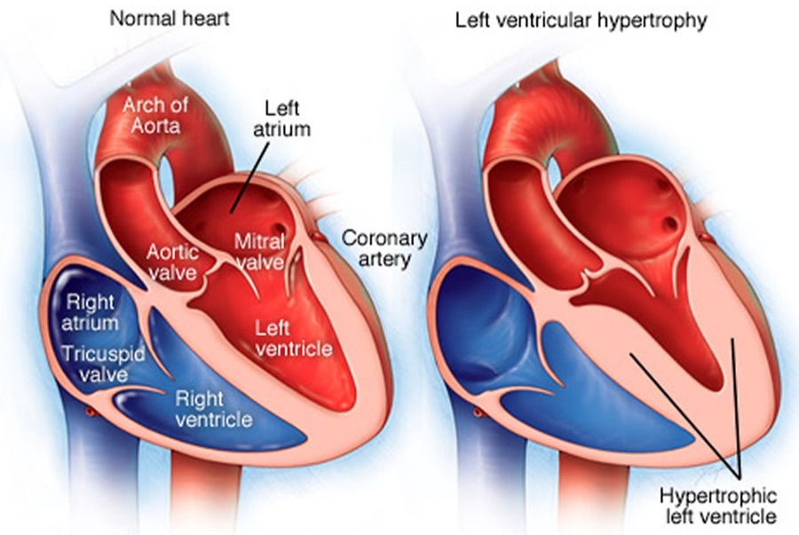
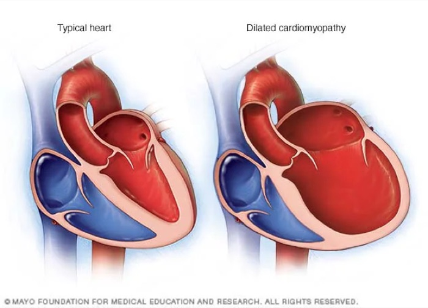
“Burn this in your memory.” The two chains are the lecture's spine (about 15 minutes, returned to at the end of each part). He described scanning a test question for one clue — a third heart sound, a normal or low pressure — and filling in the rest of the chain.
| Left ventricular… | Cause | Ejection fraction | Blood pressure | Heart sound | Edema |
|---|---|---|---|---|---|
| Systolic failure | Ischemic or dilated cardiomyopathy | Reduced | Normal or low | S3 (third heart sound) — rapid filling of a dilated left ventricle | Pulmonary |
| Diastolic failure | Hypertrophic cardiomyopathy | Preserved | Hypertension | S4 (fourth heart sound) — strong left atrial contraction against a hypertrophic left ventricle | Peripheral, then pulmonary |
“Add an elevated BNP and…” — the slam-dunk diagnosis. Most patients with systolic failure you will be asked about have ischemic or dilated cardiomyopathy.
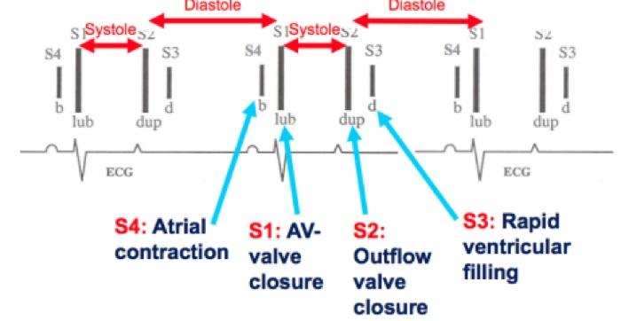
5.3 · Ejection fraction and the treatment groups
Ejection fraction is the percentage of the filled (end-diastolic) volume that the ventricle ejects with each beat. Cardiac output is stroke volume × heart rate. (The formulas themselves are not tested.)
Normal cardiac output is 5–6 liters per minute (“know it, know it, learn it, love it”). Normal ejection fraction is 50% or more (“cannot express that enough”) — the “giant line down the middle” of treatment is 50% and above versus 49% and below.
| Group | Left ventricular ejection fraction (2022) |
|---|---|
| Heart failure with reduced ejection fraction (HFrEF) | ≤40% |
| Heart failure with mildly reduced ejection fraction (HFmrEF) | 41–49% — “those numbers are very specific” |
| Heart failure with preserved ejection fraction (HFpEF) | ≥50% |
| Heart failure with improved ejection fraction (HFimpEF) | Was ≤40%, now >40% — “these are important”: someone who has recovered is treated differently from someone who was never reduced |
5.4 · NYHA classes and ACC/AHA stages
The NYHA (New York Heart Association) class grades symptoms. The ACC/AHA (American College of Cardiology / American Heart Association) stage is natural history and does not move backward.
| NYHA class | Symptoms | ACC/AHA stage | Definition (slide 24; names from slide 52) |
|---|---|---|---|
| I | No symptoms | A — at risk | Risk factors, normal heart function, no symptoms |
| II | Symptoms with exertion | B — pre-heart failure | Asymptomatic structural heart disease: ischemic cardiomyopathy, systolic dysfunction, diastolic dysfunction, left ventricular hypertrophy |
| III | Symptoms with slight exertion | C — symptomatic | Symptomatic structural heart disease, past or current — resolved symptoms stay stage C |
| IV | Symptoms at rest | D — advanced | Advanced heart failure (slide 24 says “decompensated”; see the 2022 box) |
2022 therapy by stage (slide 52). “It'll be on your test: what is the number one first medication … if you're high risk, especially if you're diabetic? SGLT2, not a beta blocker.”
| Stage | Therapy (strength of recommendation) |
|---|---|
| A — at risk | Sodium-glucose cotransporter 2 inhibitor in patients with diabetes (strong). No beta blocker yet. |
| B — pre-heart failure | Sodium-glucose cotransporter 2 inhibitor in diabetes (strong) · ACE (angiotensin-converting enzyme) inhibitor (strong) · angiotensin receptor blocker if the ACE inhibitor is not tolerated (strong) · beta blocker (strong) |
| C and D | By ejection fraction group — see 4.7 |
5.5 · Clinical manifestations
Clinical heart failure = signs and symptoms of heart failure from a structural or functional cardiac abnormality, plus one of: an elevated BNP (B-type natriuretic peptide), or objective evidence of cardiogenic pulmonary or systemic congestion.
- Volume overload: dyspnea on exertion, paroxysmal nocturnal dyspnea (waking breathless), orthopnea (breathless lying flat), pulmonary or peripheral edema, elevated jugular venous pressure, tachycardia, S3 and S4.
- Inadequate tissue perfusion: weakness, fatigue, lethargy, malaise; syncope, near-syncope, obtundation.
- Renal dysfunction: acute kidney injury, decreased urine output.
Bedside hemodynamic profiles
Congestion (wet vs dry) crossed with perfusion (warm vs cold): warm and dry is normal, warm and wet is congestion, cold and dry is hypoperfusion, cold and wet is both. Low-perfusion signs: narrow pulse pressure, sleepy or obtunded, low serum sodium, cool extremities, hypotension with an ACE inhibitor, renal dysfunction. Congestion signs: orthopnea / paroxysmal nocturnal dyspnea, jugular venous distension, hepatomegaly, edema, rales (rare in chronic heart failure).
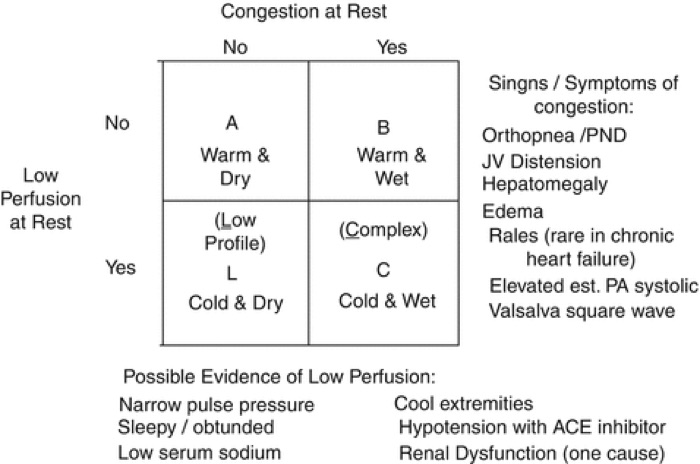
5.6 · Diagnosis and natriuretic peptides
Congestive heart failure is a CLINICAL DIAGNOSIS: signs and symptoms of heart failure + an elevated BNP or cardiogenic pulmonary or systemic congestion. “Clinical diagnosis requires congestion; congestion = edema” (pulmonary and/or peripheral). Fatigue and exertional dyspnea without any edema do not make it congestive.
| Test | What it answers |
|---|---|
| Echocardiogram | Most accurate for structures (valves); classifies by ejection fraction; the definitive test for right-sided failure |
| MUGA (multigated acquisition scan) | Most accurate ejection fraction and perfusion — when it disagrees with the echo on the ejection fraction, trust this one |
| Chest radiograph | Pleural effusion, cephalization of vessels, Kerley B lines, increased cardiothoracic ratio |
| Complete blood count | The differential diagnosis (for example anemia) |
| Complete metabolic panel | Electrolytes, potassium above all; renal function (blood urea nitrogen, creatinine, filtration rate) |
| Troponin | Only with concern for a non-ST-elevation infarction or heart failure secondary to ischemic cardiomyopathy |
| Electrocardiogram | Ischemic changes (ST elevation, T-wave inversion) · left ventricular hypertrophy: tall R in V5–V6, deep S in V1–V2 · right heart strain: right axis deviation, right bundle branch block, T-wave inversion in V1–V3 |
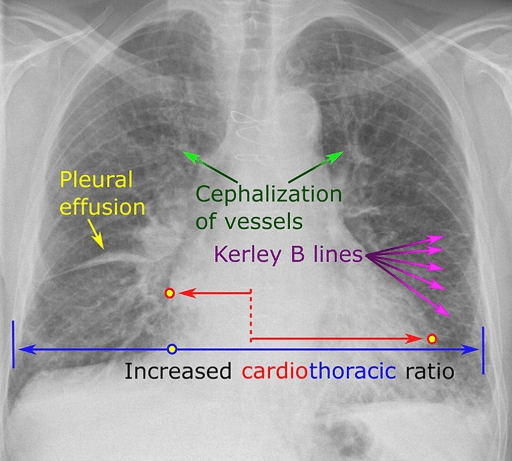
“Make sure you know the difference between whether your test was a BNP or the new pro-BNP” — and “what you do need to remember is what your cutoff levels are.”
| BNP (B-type natriuretic peptide) | NT-proBNP (N-terminal pro-B-type natriuretic peptide) | |
|---|---|---|
| What it is | Bioactive hormone secreted mainly by the ventricular myocardium in response to wall stress from volume or pressure overload | Inactive precursor fragment; requires enzymatic activation |
| Timing | Rises 1–3 hours, peaks at 12 hours | More stable: peaks at 24 hours, detected earlier and detectable longer |
| Caveat | Degraded by neprilysin, so altered by sacubitril-valsartan | Not the one degraded by neprilysin |
| Rule out acute heart failure | <100 (negative predictive value above 90%) | <300 (negative predictive value above 90%) |
| Gray zone | 100–400: no useful sensitivity or specificity | — |
| Likely heart failure | >400 | >125 if younger than 75 · >450 if older than 75 |
| Likely acute heart failure | >900 (“over 900, they're not going home”) | — |
The two have similar sensitivity and specificity for ruling heart failure in and out. Prognosis: each BNP rise of 100 means a 35% higher relative risk of death, and a predischarge BNP below 430 means a lower risk of 30-day readmission.
5.7 · Treatment
Goals: decrease symptoms · increase survival · limit disease progression — which is why the regimen continues after the patient feels better.
| Class | Generic examples (slide 40) | Note |
|---|---|---|
| Potassium-wasting diuretics | Thiazide-like: hydrochlorothiazide, metolazone · loop: furosemide, bumetanide | Monitor potassium and renal function |
| ACE inhibitor / angiotensin receptor blocker / angiotensin receptor-neprilysin inhibitor | Lisinopril, enalapril / losartan, valsartan, irbesartan / sacubitril-valsartan | |
| Beta blocker | Learn the class | See the 2022 box |
| Sodium-glucose cotransporter 2 inhibitor | Dapagliflozin, empagliflozin | |
| Mineralocorticoid receptor antagonist | Spironolactone, eplerenone | Potassium-sparing diuretic |
| Nitrates | Isosorbide dinitrate (with hydralazine) | For the selected group below |
“The other part I want you to remember is GDMT” (guideline-directed medical therapy). “GDMT for HFpEF and HFmrEF are very similar. It's different for HFrEF.” Strength: strong / moderate / weak (slide 52, the 2022 figure).
| Reduced (≤40%) | Mildly reduced (41–49%) | Preserved (≥50%) |
|---|---|---|
| Angiotensin receptor-neprilysin inhibitor in NYHA II–III, or ACE inhibitor / angiotensin receptor blocker in NYHA II–IV (strong) Beta blocker (strong) Mineralocorticoid receptor antagonist (strong) Sodium-glucose cotransporter 2 inhibitor (strong) Diuretics as needed (strong) Hydralazine + isosorbide dinitrate for African American patients in NYHA III–IV (strong) |
Diuretics as needed (strong) Sodium-glucose cotransporter 2 inhibitor (moderate) ACE inhibitor, angiotensin receptor blocker, angiotensin receptor-neprilysin inhibitor (weak) Mineralocorticoid receptor antagonist (weak) Beta blocker (weak) |
Diuretics as needed (strong) Sodium-glucose cotransporter 2 inhibitor (moderate) Angiotensin receptor-neprilysin inhibitor (weak) Mineralocorticoid receptor antagonist (weak) Angiotensin receptor blocker (weak) |
Reduced ejection fraction therapy is prioritized for comorbidities and optimized as hemodynamically stable — each class is raised as blood pressure and tolerance allow (slide 56).
Sudden death protection (slide 53)
- Implantable cardioverter-defibrillator for ischemic or non-ischemic cardiomyopathy with ejection fraction ≤35%, NYHA class II–III, on optimal guideline-directed therapy, with a life expectancy of at least one year.
- 52% of cardiac arrests in hospitalized patients with reduced ejection fraction are due to ventricular arrhythmias.
- After acute heart failure (from infarction, sepsis and similar) with ejection fraction <35%: wearable defibrillator vest → optimize therapy + cardiac rehabilitation → recheck echocardiogram → implantable device only if not improved.
5.8 · The conditions, point by point
Heart failure — the syndrome overall
Defining feature: output that cannot meet demand, or meets it only at high filling pressures — clinically, symptoms plus an elevated BNP or congestion
- Definition
- Inability to pump blood at a rate that meets metabolic demand at rest and with effort, or doing so only with abnormally high filling pressures. A syndrome from any structural or functional disorder that impairs filling or ejection.
- Who gets it
- 6.7 million Americans older than 20; 60% of patients are older than 65; 10–15% of people older than 80; lifetime risk 1 in 4.
- Risk factors
- Age, hypertension, coronary artery disease, diabetes, chronic tachyarrhythmias, obesity / metabolic syndrome, excessive alcohol, tobacco, family history, genetic abnormality, cardiotoxic medications.
- Classic signs & symptoms
- Dyspnea on exertion, paroxysmal nocturnal dyspnea, orthopnea, edema; fatigue, weakness, near-syncope from poor perfusion.
- Physical exam findings
- Pulmonary or peripheral edema, S3 and/or S4, elevated jugular venous pressure, tachycardia, crackles; low-perfusion signs (narrow pulse pressure, cool extremities, obtundation).
- Diagnostics / tests
- Clinical diagnosis + BNP or congestion. Echocardiogram (structures, ejection fraction group), MUGA (most accurate ejection fraction), chest radiograph, complete blood count, complete metabolic panel, troponin if ischemia is a concern, electrocardiogram.
- First-line treatment
- By stage and ejection fraction group (5.4, 5.7). Goals: fewer symptoms, longer survival, slower progression. Avoid calcium channel blockers.
- Complications
- Renal dysfunction (acute kidney injury, low urine output); ventricular arrhythmias; reduced longevity — 35% one-year mortality after hospitalization in those older than 65; 45% of cardiovascular deaths.
Slides 4–6, 16, 18, 26, 32–33, 38, 40, 52–53
Left-sided heart failure
Defining feature: the most common by far — 70–80%; pulmonary congestion
- Definition
- Left ventricular involvement: systolic or diastolic failure; dilated, hypertrophic or restrictive cardiomyopathy; ischemic or non-ischemic; preserved or reduced ejection fraction.
- Who gets it
- 70–80% of all heart failure.
- Risk factors
- Not covered separately (the general list applies).
- Classic signs & symptoms
- Systolic: normal or low blood pressure, S3, pulmonary edema. Diastolic: hypertension, S4, peripheral then pulmonary edema. Orthopnea, paroxysmal nocturnal dyspnea.
- Physical exam findings
- S3 (rapid filling of a dilated left ventricle) or S4 (atrial contraction against a hypertrophic left ventricle); crackles.
- Diagnostics / tests
- Not covered separately from heart failure overall.
- First-line treatment
- Not covered separately — therapy follows the ejection fraction group.
- Complications
- Chronic left-sided failure is the most common cause of right-sided failure.
Slides 8, 9, 26–27, 39, 56
Right-sided heart failure
Defining feature: fluid backs up — edema, distended neck veins, an enlarged liver; most often caused by chronic left-sided failure
- Definition
- Heart failure of the right ventricle (systolic or diastolic; any cardiomyopathy; ischemic from the right coronary artery or non-ischemic).
- Who gets it
- Epidemiology, risk factors and pathology are the same as left-sided.
- Risk factors
- Causes: chronic left-sided heart failure (most common: left failure → right hypertrophic → right dilated cardiomyopathy), mitral valve stenosis, pulmonary arterial hypertension.
- Classic signs & symptoms
- Systemic overload: peripheral edema, jugular venous distension. Portal overload: nausea, loss of appetite, hepatomegaly (congestion, ascites).
- Physical exam findings
- With mitral stenosis: rumbling diastolic murmur at the apex with an opening snap. With tricuspid regurgitation in pulmonary arterial hypertension: holosystolic murmur at the left lower sternal border, louder on inspiration.
- Diagnostics / tests
- Clinical heart failure with jugular venous distension raises suspicion; echocardiogram gives the definitive diagnosis (by ejection fraction); right heart catheterization grades hemodynamic severity (its pressure values are not tested). Electrocardiogram: right heart strain.
- First-line treatment
- Same as left-sided: symptom management, the underlying cause, heart transplant, palliative care.
- Complications
- Prognosis much worse than left-sided failure.
Slides 9–10, 27, 32–34
Combined right and left heart failure
Defining feature: both ventricles have failed — management moves to comfort and transplant
- Definition
- Not covered in the lecture (title only).
- Who gets it
- Not covered in the lecture.
- Risk factors
- Not covered in the lecture (chronic left failure is the usual route to the right side).
- Classic signs & symptoms
- Not covered in the lecture.
- Physical exam findings
- Not covered in the lecture.
- Diagnostics / tests
- Not covered in the lecture.
- First-line treatment
- Symptom management, comfort care, transplant.
- Complications
- Not covered in the lecture.
Slide 11
Reduced ejection fraction (systolic) — including improved ejection fraction
Defining feature: the weak squeeze — ejection fraction ≤40%, normal or low pressure, S3, pulmonary edema
- Definition
- Failure of systolic function (contraction). Ejection fraction ≤40%. Improved ejection fraction: was ≤40%, now >40%.
- Who gets it
- Not covered in the lecture; the causes are ischemic or dilated cardiomyopathy.
- Risk factors
- Ischemic cardiomyopathy (infarction, ischemia, shock); dilated cardiomyopathy.
- Classic signs & symptoms
- Normal or low blood pressure, pulmonary edema, dyspnea.
- Physical exam findings
- S3 — rapid filling of a dilated left ventricle; crackles.
- Diagnostics / tests
- Echocardiogram (ejection fraction ≤40%; MUGA most accurate for the number) + elevated BNP.
- First-line treatment
- Angiotensin receptor-neprilysin inhibitor (NYHA II–III) or ACE inhibitor / angiotensin receptor blocker (II–IV), beta blocker, mineralocorticoid receptor antagonist, sodium-glucose cotransporter 2 inhibitor, diuretics as needed — all strong; hydralazine + isosorbide dinitrate for African American patients in NYHA III–IV.
- Complications
- Ventricular arrhythmias cause 52% of cardiac arrests in hospitalized patients — defibrillator if ejection fraction ≤35%, NYHA II–III, on optimal therapy, life expectancy ≥1 year.
Slides 12–13, 17, 22–23, 25, 32, 39, 52–53, 56
Preserved ejection fraction (diastolic)
Defining feature: the stiff, thick ventricle that cannot relax — hypertension, S4, edema peripheral first; ejection fraction ≥50%
- Definition
- Failure of diastolic function (relaxation). Ejection fraction ≥50%.
- Who gets it
- Not covered in the lecture; the cause is hypertrophic cardiomyopathy, driven by hypertension.
- Risk factors
- Hypertension → hypertrophic cardiomyopathy.
- Classic signs & symptoms
- Hypertension; peripheral edema, then pulmonary edema.
- Physical exam findings
- S4 — strong left atrial contraction against a hypertrophic left ventricle.
- Diagnostics / tests
- Echocardiogram (preserved fraction; left ventricular wall >10 mm = hypertrophy) + elevated BNP. Electrocardiogram: tall R in V5–V6, deep S in V1–V2.
- First-line treatment
- Diuretics as needed (strong); sodium-glucose cotransporter 2 inhibitor (moderate); angiotensin receptor-neprilysin inhibitor, mineralocorticoid receptor antagonist, angiotensin receptor blocker (weak). Other classes for comorbidities.
- Complications
- Not covered in the lecture.
Slides 12–14, 17, 23, 25, 32, 39, 52, 56
Mildly reduced ejection fraction
Defining feature: ejection fraction 41–49% that has never been ≤40%
- Definition
- Ejection fraction 41–49% (the deck says “moderately”; learn “mildly”).
- Who gets it
- Not covered in the lecture.
- Risk factors
- Not covered in the lecture.
- Classic signs & symptoms
- Not covered in the lecture.
- Physical exam findings
- Not covered in the lecture.
- Diagnostics / tests
- Echocardiogram ejection fraction 41–49%.
- First-line treatment
- Diuretics as needed (strong); sodium-glucose cotransporter 2 inhibitor (moderate); ACE inhibitor, angiotensin receptor blocker, angiotensin receptor-neprilysin inhibitor, mineralocorticoid receptor antagonist, beta blocker (weak) — “very similar” to preserved.
- Complications
- Not covered in the lecture.
Slides 23, 30, 52, 56
Acute and acute decompensated heart failure
Defining feature: sudden onset — new, or an exacerbation (“acute on chronic” once disease has lasted over a year)
- Definition
- Acute = sudden, new onset or exacerbation. Chronic = more than 1 year. Sequence: pre-heart failure (asymptomatic) → acute new-onset (symptomatic) → resolution → exacerbation → chronic → acute on chronic.
- Who gets it
- Not covered in the lecture.
- Risk factors
- Precipitants named: myocardial infarction, sepsis, “ARF” (unexpanded on the slide), “etc”.
- Classic signs & symptoms
- Congestion = edema (pulmonary and/or peripheral); dyspnea.
- Physical exam findings
- Crackles; hemodynamic profile (warm/cold, wet/dry).
- Diagnostics / tests
- BNP <100 rules out acute heart failure; >900 makes it likely. NT-proBNP <300 rules it out.
- First-line treatment
- Diuretics for congestion; inotropes (dobutamine, milrinone and others) in intensive care only; wearable defibrillator pathway if ejection fraction <35% after the event.
- Complications
- One-year mortality after hospitalization 35% (older than 65); each BNP rise of 100 = 35% higher relative risk of death; predischarge BNP <430 = lower 30-day readmission.
Slides 6, 28–31, 38, 51, 53
High-output heart failure
Defining feature: elevated cardiac output driven by increased peripheral demand
- Definition
- Elevated cardiac output from increased heart rate and contractility.
- Who gets it
- Not covered in the lecture. Causes: anemia, hyperthyroidism, arteriovenous fistula.
- Risk factors
- Obesity, chronic obstructive pulmonary disease, cirrhosis, Paget disease (osteitis deformans).
- Classic signs & symptoms
- The heart failure syndrome: fatigue, dyspnea, edema, palpitations.
- Physical exam findings
- Not covered in the lecture beyond the syndrome.
- Diagnostics / tests
- Echocardiogram, complete blood count, complete metabolic panel, BNP.
- First-line treatment
- Treat the underlying cause; diuretic.
- Complications
- Increased demand may lead to ischemic cardiomyopathy or remodeling.
Slide 54
5.9 · Populations
| Population | What the deck gives |
|---|---|
| Infant, child, adolescent | Nothing — the deck's own objectives slide limits it to adult and elderly patients. |
| Adult | NT-proBNP: heart failure likely above 125 when younger than 75. |
| Elderly | 60% of patients are older than 65, with 35% one-year mortality after hospitalization; 10–15% of people older than 80 have heart failure. NT-proBNP threshold rises to 450 when older than 75. |
★ Quick reference
Secondary cause → the one clue that names it
| Clue | Cause |
|---|---|
| Unexplained hypokalemia with resistant pressure | Primary aldosteronism |
| Abdominal bruit, asymmetric kidneys, flash pulmonary edema | Renovascular disease |
| Marked creatinine rise after starting an ACE inhibitor | Bilateral renal artery stenosis |
| Loud snoring, witnessed apneas, daytime sleepiness | Obstructive sleep apnea |
| Proximal weakness, bruising, thin skin, purple striae | Cushing syndrome |
| Paroxysmal pressure, perspiration, palpitations, pallor, tremor | Pheochromocytoma |
| Radial-femoral delay; leg pressure lower than arm | Coarctation of the aorta |
| Systolic elevation with tachycardia / diastolic elevation with cold intolerance | Hyper- / hypothyroidism |
Adverse effect → the class it belongs to
| Effect | Class |
|---|---|
| Dry cough, hyperkalemia, angioedema | ACE inhibitor |
| Dependent ankle edema, flushing, gingival enlargement | Dihydropyridine calcium channel blocker |
| Bradycardia and heart block (worse with a beta blocker) | Non-dihydropyridine (verapamil, diltiazem) |
| Hyponatremia, hypokalemia, hyperuricemia, volume depletion | Thiazide-type diuretic |
| Reflex tachycardia and fluid retention | Hydralazine |
| Sedation, dry mouth, rebound hypertension on withdrawal | Central alpha-2 agonist (clonidine) |
The things that are NOT what they look like
| It looks like… | …but |
|---|---|
| A very high reading means an emergency | No numeric cutoff exists — acute organ injury defines it |
| A normal electrocardiogram excludes hypertrophy | The criteria are specific but not sensitive |
| A normal chest radiograph excludes dissection | It does not — and neither do normal pulses |
| A normal ejection fraction excludes heart failure | Preserved-fraction failure is a recognized endpoint |
| Normal office readings mean normal pressure | Masked hypertension carries real risk |
| Resistant pressure means more drugs are needed | Nonadherence is the commonest cause; check technique too |
| ACE inhibitor + ARB is a logical combination | Never — harm without benefit |
| Lowering the pressure fast in an emergency is safest | Autoregulation has adapted; rapid reduction causes ischemia |